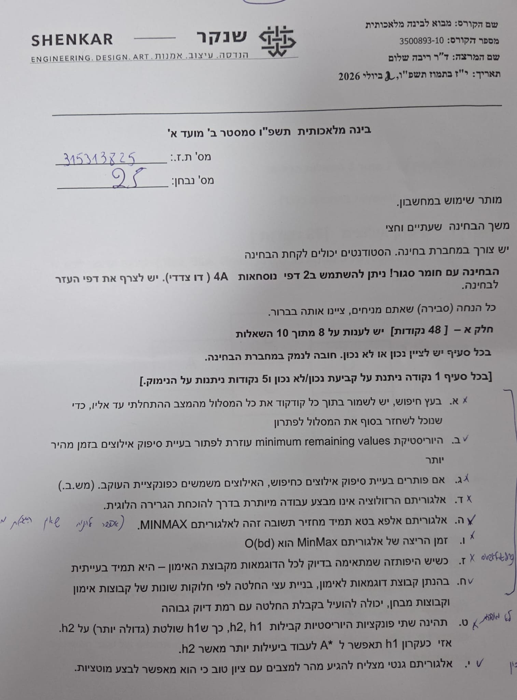
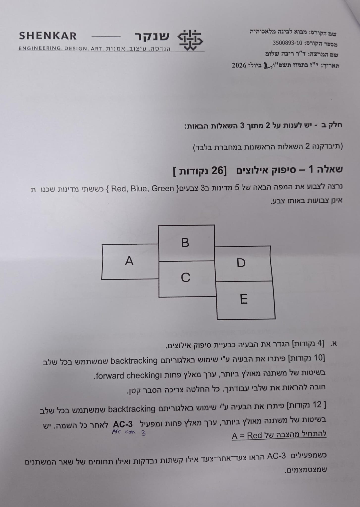
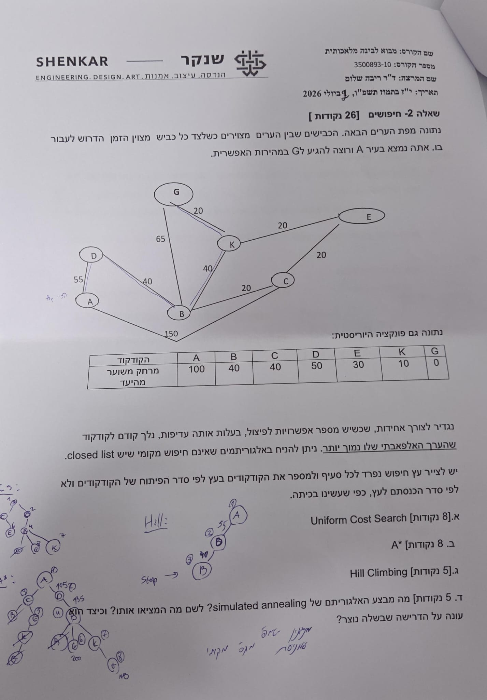
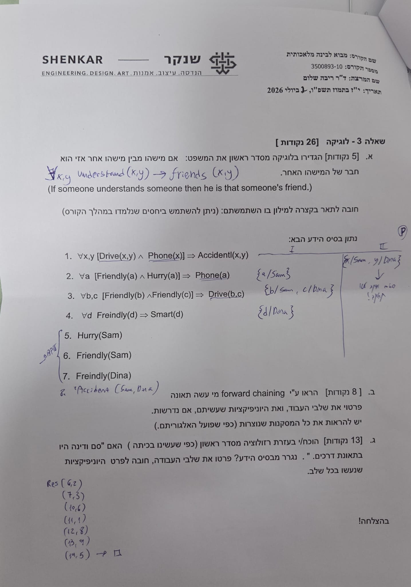

הכנה למבחן — מבחנים אמיתיים וכל תרגילי הבית
⏱ זמן משוער: 120 דק'
1. מבנה המבחן — איך זה עובד, ואיך משחקים את המשחק נכון
זהו העמוד החשוב באתר. שלושת המסמכים שנבדקו — מבחן לדוגמה 1, מבחן לדוגמה 2, והמבחן האמיתי שנערך בפועל בתשפ"ו סמסטר ב' מועד א' (2 ביולי 2026) — חולקים מבנה זהה לחלוטין. ברגע שמכירים את המבנה, המבחן מפסיק להיות מפתיע ונהיה תרגיל ניהול-זמן.
- חומר: בחינה עם חומר סגור — מותר להביא 2 דפי נוסחאות A4, כתובים משני הצדדים (יש לצרף אותם לבחינה), ומחשבון.
- משך: המבחנים לדוגמה — שעה ורבע וחצי (שעתיים ורבע); המבחן האמיתי (2026) — שעתיים וחצי. תכננו את הזמן לפי הדגם האמיתי.
- חלק א' — 48 נק' — 10 היגדי נכון/לא נכון עם נימוק. עונים על 8 מתוך 10. נבדקות 8 ההיגדים הראשונים בלבד — אם עניתם על יותר משמונה, התוספת לא נקראת כלל! כל היגד: 1 נקודה על קביעת נכון/לא נכון, ו5 נקודות על הנימוק.
- חלק ב' — 52 נק' — 3 שאלות פתוחות (26 נק' כל אחת), עונים על 2 מתוך 3. נבדקות 2 השאלות הראשונות שנכתבו במחברת — שוב, סדר הכתיבה קובע. נושאים אופייניים: לוגיקה (FOL, שרשור, רזולוציה), חיפושים (ניסוח פורמלי, הרצות אלגוריתמים, משחקים, אלגוריתם גנטי), ו-CSP.
מה כדאי לכתוב על 2 דפי הנוסחאות
שני דפי ה-A4 (דו-צדדיים) הם המשאב היקר ביותר שלכם בזמן המבחן. על בסיס כל מה שנבדק בשלושת המבחנים ובבוחן, הנה מה שממש כדאי שיהיה שם:
- שתי טבלאות ההשוואה של המרצה — חיפוש לא-מיודע (BFS/UCS/Bidirectional/DFS/DLS/IDS) וחיפוש מיודע (Greedy/A*/IDA*), עם שלמות/אופטימליות/סיבוכיות-זמן/סיבוכיות-מקום לכל אלגוריתם (ראו סעיף 6 למטה — מוכנות להעתקה).
- נוסחאות עצי החלטה: I(p,n) = −p·log₂(p) − n·log₂(n), Remainder(A) = Σ (משקל הענף)·I(התפלגות בענף), Gain(A) = I − Remainder(A) — ובוחרים במאפיין עם ה-Gain המקסימלי.
- A* / חיפוש מיודע: f(n) = g(n) + h(n), הגדרת קבילות (h(n) ≤ h*(n)) מול עקביות/מונוטוניות, וכלל השליטה בין שתי היוריסטיקות.
- אלפא-בטא: קודקוד MAX מעדכן α, קודקוד MIN מעדכן β, גיזום כש-α ≥ β.
- CSP: שלושת השיפורים ל-Backtracking — MRV (משתנה מאולץ ביותר), LCV (ערך מאלץ פחות), forward checking / AC-3; והגדרת CSP-כחיפוש (מצב=השמה חלקית, עוקב=הוספת השמה, מטרה=כל המשתנים מוקצים וכל האילוצים מתקיימים).
- לוגיקה: המרה ל-CNF (p⇒q ≡ ¬p∨q, דה-מורגן, פילוג), סדר העדיפויות ב-DPLL (קלוז יחידה ← ליטרל טהור ← פיצול), וטבלת ה"שרשור" (מי גורר את מי): BFS ⊂ UCS ⊂ A*.
דפוסי היגדים "מסוכנים" — לזהות את הניסוח
המרצה אוהבת ניסוחים עם מילות-הגזמה — "תמיד", "בהכרח", "רק", "לכל" — ורוב הזמן (לא תמיד!) היגד עם מילה כזו מסתיר יוצא-מן-הכלל שהופך אותו ל"לא נכון". לדוגמה: "IDA* תמיד מקצר את זמן הריצה של A*" — לא נכון (היתרון האמיתי הוא זיכרון, לא זמן). אבל היזהרו מלהפוך את זה לכלל אוטומטי: "אלפא-בטא תמיד מחזיר תשובה זהה ל-MinMax" — זהו היגד נכון למרות מילת ה"תמיד"! מילת ההגזמה היא סימן לבדוק לעומק, לא תשובה מוכנה.
מקור: sample-exam-1.pdf, sample-exam-2.pdf, exam-2026-page1-4.jpeg — פורמט המבחן, שער ותנאים.
2. מבחן לדוגמה 1 — תרגול מלא עם התשובות הרשמיות
המבחן המלא, היגד-היגד ושאלה-שאלה. חלק א' מוצג כאן כ-10 היגדי נכון/לא נכון אינטראקטיביים (לחצו נכון/לא נכון ותקבלו את הנימוק המלא). חלק ב' מוצג כשאלות פתוחות עם התשובה הרשמית (מלוח הבדיקה שצולם) בתוך "הצג פתרון". שימו לב: התשובות הרשמיות שהתקבלו לחלק ב' הן מלוח כתוב ביד — היכן שהכתב לא היה קריא במלואו, זה מצוין בבירור.
חלק א' — 10 היגדים (עונים על 8, נבדקות ה-8 הראשונות; 48 נק')
א. למידה בשיתוף (ensembled Learning) יכולה ליצור אלגוריתם החלטה טובה יותר מאשר עץ החלטה יחיד שיבנה על אותן דוגמאות אימון.
ב. כאשר יש לנו קבוצת אימון של דוגמאות המתפלגות באופן נורמלי על העולם, (משקפות היטב את המציאות) אין חשיבות לסדר בחירת המאפיינים (מתוך שיעורי הבית).
ג. ייתכן שכשנפעיל את אלגוריתם אלפא–בטא מצד ימין לשמאל - יגזמו קודקודים רבים וכשנפעיל את אותו אלגוריתם משמאל לימין לא יגזמו הרבה קודקודים.
ד. Depth Limited Search הוא אלגוריתם שלם. (מבחינת תכונת השלמות שבדקנו לאלגוריתמים)
ה. תוצאה של מינימום/ מקסימום מקומי, כלומר פתרון לא אופטימלאי, יכולה להתקבל גם מאלגוריתם חיפוש שאינו חיפוש מקומי. יש להסביר כיצד זה יקרה/ לא יקרה.
ו. הערך ששומר אלגוריתם A* בכל קודקוד הוא עלות המסלול הכי יעיל מהמצב ההתחלתי עד המטרה, שעובר דרך קודקוד זה.
ז. A* שעובד עם פונקציה היוריסטית קבילה יפתח רק את הקודקודים על המסלול האופטימאלי.
ח. על כל בעיית חיפוש ניתן להפעיל את Bidirectional Search.
ט. אפשר לעשות יוניפיקציה ליחסים הבאים: See(Sam,w), See(k, brother(k)).
י. Iterative deepening A* הוא אלגוריתם שתמיד מקצר תמיד מקצר את זמן הריצה של A*.
חלק ב' — 3 שאלות פתוחות (עונים על 2, נבדקות הראשונות; 26 נק' כל אחת)
שאלה 1 — לוגיקה [26 נקודות]
א. [6 נקודות] הגדירו בלוגיקה מסדר ראשון את היחס – סבתא רבא רבא (GreatGreatGrandmother) — כלומר 4 דורות מעל הנכד. חובה לתאר בקצרה במילון בו השתמשתם: (ניתן להשתמש ביחסים שנלמדו במהלך הקורס)
נתון בסיס ידע הבא:1. Go(Dan, School) 2. ¬Scarry(a) ∨ Courage(a) 3. ¬[Go(d,e) ∧ Scarry(e) ∧ Scarry(f)] ∨ ¬Go(d,f) 4. ¬¬Go(Dan,g) ∨ Go(Ron,g) 5. ¬Dangerous(h) ∨ Scarry(h) 6. ¬Interesting(k) ∨ Scarry(k) 7. Dangerous(Ski) 8. Interesting(School)ב. [10 נקודות] הראו ע"י forward chaining מי הולך לסקי. פרט/י את שלבי עבודתך, ואת היוניפיקציות שהנרך מבצע/ת, אם נדרשות. יש להראות את כל המסקנות שנוצרות (כפי שפועל האלגוריתם).
ג. [10 נקודות] הוכח/י בעזרת רזולוציה מסדר ראשון (כפי שעשינו בכיתה) האם "רון הולך לסקי" נגרר מבסיס הידע? פרט/י את שלבי עבודתך, חובה לפרט היוניפיקציות שהנרך מבצע/ת, אם נדרשות, בכל שלב.
הערה: תמלול לוח הבדיקה שנסרק מתחיל ישירות מסעיף ב' (forward chaining) — סעיף א' לא נמצא מתועד בתשובון הרשמי. הפתרון הבא מוצע לפי אותה שיטת הגדרה שהמרצה משתמשת בה בתרגיל 9 (יחסי משפחה).
מילון: Parent(x,y) — x הורה של y; Female(x) — x נקבה.
∀x,y GreatGreatGrandmother(x,y) ⟺
Female(x) ∧ ∃z,w,v [Parent(x,z) ∧ Parent(z,w) ∧ Parent(w,v) ∧ Parent(v,y)]
כלומר: x היא סבתא-רבא-רבא של y אם x נקבה, וקיימת שרשרת של 4 יחסי הורה-ילד רצופים מ-x עד ל-y (4 דורות בדיוק, כנדרש).
המרה לצורה A⇒B ליישום forward chaining (הכללים נכתבים כגרירות):
2. Scary(a) ⟹ Courage(a) 3. Go(d,e) ∧ Scary(e) ∧ Scary(f) ⟹ ¬Go(d,f) 4. ¬Go(Dan,g) ⟹ Go(Ron,g) 5. Dangerous(h) ⟹ Scary(h) 6. Interesting(k) ⟹ Scary(k)
עץ ה-forward chaining (כפי שצויר על הלוח):
עובדות הבסיס: Go(Dan,School), Dangerous(Ski), Interesting(School).
- מ-Dangerous(Ski) דרך כלל 5 (בהצבה {h/Ski}) נגזר: Scary(Ski).
- מ-Interesting(School) דרך כלל 6 (בהצבה {k/School}) נגזר: Scary(School).
- מ-Scary(Ski) דרך כלל 2 (בהצבה {a/Ski}) נגזר: Courage(Ski).
- מ-Scary(School) דרך כלל 2 (בהצבה {a/School}) נגזר: Courage(School).
- מ-Go(Dan,School) יחד עם Scary(Ski) ו-Scary(School) דרך כלל 3 (בהצבה {d/Dan, e/School, f/Ski}) נגזר: ¬Go(Dan,Ski).
- מ-¬Go(Dan,Ski) דרך כלל 4 (בהצבה {g/Ski}) נגזר: Go(Ron,Ski).
מסקנה: רון הולך לסקי (Go(Ron,Ski)) — זו התשובה לשאלה "מי הולך לסקי".
רשימת הפסוקיות (CNF של בסיס הידע + שלילת המסקנה כפסוקית 9):
1. Go(Dan, School) 2. ¬Scary(a) ∨ Courage(a) 3. ¬Go(d,e) ∨ ¬Scary(e) ∨ ¬Scary(f) ∨ ¬Go(d,f) 4. Go(Dan,g) ∨ Go(Ron,g) [אחרי צמצום כפל שלילה מ- ¬¬Go(Dan,g)] 5. ¬Dangerous(h) ∨ Scary(h) 6. ¬Interesting(k) ∨ Scary(k) 7. Dangerous(Ski) 8. Interesting(School) 9. ¬Go(Ron,Ski) [שלילת המסקנה שרוצים להוכיח: "רון הולך לסקי"]
שלבי הרזולוציה:
10. Res(4,9) = Go(Dan,Ski) {g/Ski}
11. Res(5,7) = Scary(Ski) {h/Ski}
12. Res(6,8) = Scary(School) {k/School}
13. Res(3,10) = ¬Scary(Ski) ∨ ¬Scary(f) ∨ ¬Go(Dan,f) {d/Dan, e/Ski}
14. Res(1,13) = ¬Scary(Ski) ∨ ¬Scary(School) {f/School}
15. Res(11,14) = ¬Scary(School)
16. Res(12,15) = □ (פסוקית ריקה — סתירה!)
מסקנה: התקבלה פסוקית ריקה ⇒ יש הוכחה (בסתירה) שרון הולך לסקי — תואם את תוצאת ה-forward chaining.
שאלה 2 — חיפושים [26 נקודות]
במשחק O/X יש שני משתתפים, אחד מסמן X והשני O, במשבצת ריקה. המשחק מסתיים כאשר לאחד השחקנים יש 3 משבצות ברצף, בקו ישר או באלכסון, עם הציור שלו.
א. [סה"כ 9 נקודות] ייצג/י את הבעיה כבעיית חיפוש באופן פורמלי תוך התייחסות לפרמטרים הבאים:
— [1 נקודות] מהי הגדרת מצב כללי?
— [1 נקודות] מהי פונקציית העוקב?
— [6 נקודה] מהו מבחן המטרה, כלומר מתי מסתיים המשחק? (לא משנה אם יש מנצח או לא, ואם יש מנצח לא משנה מיהו. העיקר שהמשחק מסתיים)
— [1 נקודה] מהי עלות צעד?
ב. [8 נקודות] יהי לוח המשחק הבא.
| _ | X | _ |
| X | _ | O |
| O | O | X |
הפעל עליו BFS עד למציאת מסלול בו ינצח שחקן X. שימו לב, אנו בשאלת חיפוש ולא בשאלת משחקים. נניח שאותו משתמש מסמן גם את X וגם את O — משתמש אחד בלבד מבצע את שני הצעדים לסירוגין (X ואז O ואז X...).
ג. [3 נקודות] אם היינו מפעילים MINMAX על העץ שפתחתם, האם שחקן X יוכל לנצח?
ד. [6 נקודות] פרטו באיזה שלבים יש החלטות רנדומליות או הסתברותיות באלגוריתם גנטי. מדוע משתמשים בבחירות הסתברותיות אלו ולא בבחירות חמדניות?
הגדרת מצב כללי: מטריצה M[3×3] כך ש-M[i,j] ∈ {X, O, B} לכל 1≤i,j≤3 (B = משבצת ריקה/blank).
מצב התחלתי: ∀1≤i,j≤3 M[i,j]=B — כל המשבצות ריקות.
פונקציית עוקב (successor function): M[i,j] = {X,O} if M[i,j]=B — הצבת הסימן (X או O, תלוי מי משחק בתור הנוכחי) באחת המשבצות הריקות.
מבחן מטרה (יש לפחות אחת מהאפשרויות הבאות, עם ערך שאינו B):
- שורה שלמה שווה: ∃1≤i≤3 M[i,1]=M[i,2]=M[i,3]≠B
- עמודה שלמה שווה: ∃1≤j≤3 M[1,j]=M[2,j]=M[3,j]≠B
- אלכסון ראשי שווה: M[1,1]=M[2,2]=M[3,3]≠B
- אלכסון משני שווה: M[3,1]=M[2,2]=M[1,3]≠B
- תיקו/סיום ללא ניצחון: ∀1≤i,j≤3 M[i,j]≠B (הלוח מלא לגמרי, ואף אחד מהתנאים לעיל לא מתקיים).
עלות צעד: 1 לכל הצבה (לא צוין אחרת בתשובון).
הערה: התשובון הרשמי מציג עץ BFS בן 11 קודקודים בכתב-יד על גבי לוח מבריק, ומצוין בו במפורש שתוכן חלק מהמשבצות אינו ודאי ב-100% בתעתוק. הפתרון להלן הוא הרצה מלאה ומדויקת של האלגוריתם על הלוח הנתון, והיא מתלכדת עם המספר 11 קודקודים ועם עומק המציאה שמופיעים בתשובון הרשמי — כלומר מאששת ומבהירה אותו.
ספירת סימנים בלוח הנתון: X מופיע 3 פעמים, O מופיע 3 פעמים → מספר המהלכים שווה משני הצדדים ← תורו של X לשחק (X התחיל, ולכן אחרי מספר-מהלכים זוגי שוב תורו). שלוש המשבצות הריקות: (שורה1,טור1), (שורה1,טור3), (שורה2,טור2).
עץ ה-BFS (מספור לפי סדר הפיתוח; סדר קריאה שורה-טור כשובר שוויון):
1 (שורש: _,X,_ / X,_,O / O,O,X — תור X)
├── 2: X ב-(1,1) → X,X,_/X,_,O/O,O,X (תור O)
│ ├── 5: O ב-(1,3) → X,X,O/X,_,O/O,O,X (תור X)
│ │ └── 11: X ב-(2,2) → X,X,O/X,X,O/O,O,X → אלכסון (1,1)-(2,2)-(3,3)=X,X,X ← ניצחון X!
│ └── 6: O ב-(2,2) → X,X,_/X,O,O/O,O,X (תור X, לא פותח — המטרה כבר נמצאה בענף 5)
├── 3: X ב-(1,3) → _,X,X/X,_,O/O,O,X (תור O)
│ ├── 7: O ב-(1,1) → O,X,X/X,_,O/O,O,X (תיקו בהמשך, לא רלוונטי לניצחון X)
│ └── 8: O ב-(2,2) → _,X,X/X,O,O/O,O,X (תיקו בהמשך)
└── 4: X ב-(2,2) → _,X,_/X,X,O/O,O,X (תור O)
├── 9: O ב-(1,1) → O,X,_/X,X,O/O,O,X
└── 10: O ב-(1,3) → _,X,O/X,X,O/O,O,X
המסלול שנמצא (הראשון שה-BFS מגלה, לפי סדר פיתוח שמאל-לימין/שורה-טור): X ממלא (1,1) ← O ממלא (1,3) ← X ממלא (2,2) — ומשלים אלכסון X,X,X באלכסון הראשי. סה"כ נבדקו 11 קודקודים (השורש + 3 ברמה 1 + 6 ברמה 2 + 1 ברמה 3 שהוא הניצחון) — תואם את מבנה התשובון הרשמי.
סעיף ג' (MinMax): השאלה היא האם, בהינתן עץ המשחק שנבנה בסעיף ב', שחקן X יכול לנצח אם משחקים לפי MinMax. יש לבדוק את כל המהלכים האפשריים ואת תגובת היריב (O) בכל צעד — כלומר MinMax בודק את המשחק בהנחה ששני הצדדים משחקים אופטימלית, ולא רק את הענף שמראה ניצחון מהיר ל-X. (במקרה שלנו: אם O משחק אופטימלית ולא בהכרח בוחר את (1,3) בתגובה ל-X ב-(1,1), ייתכן שהתשובה המלאה תלויה בבדיקת כל ענפי ה-MinMax, לא רק המסלול שמצאה BFS.)
סעיף ד' (החלטות רנדומליות/הסתברותיות באלגוריתם גנטי) — ארבע נקודות שבהן יש רנדומיות:
- איזה הורים ייבחרו לביצוע הצלבה (crossover) — הבחירה מתבצעת לפי הסתברות (מבוססת-כושר, fitness-proportional), לא בחירה חמדנית של הטובים ביותר בלבד.
- היכן יבוצע נקודת החיתוך (crossover point) — רנדומלי.
- האם תתבצע מוטציה — רנדומלי (לפי הסתברות מוטציה).
- איזו מוטציה תתבצע ומה יהיה הערך המדויק שינבע ממנה — רנדומלי.
נימוק לשימוש בבחירות הסתברותיות ולא חמדניות: כדי למנוע התכנסות מוקדמת (premature convergence) לפתרון מקומי, ולשמר גיוון באוכלוסייה — תוך עדיין מתן העדפה (לא ודאות) לפרטים בעלי כושר גבוה יותר, כדי לאפשר בריחה ממינימום/מקסימום מקומי.
שאלה 3 — סיפוק אילוצים [26 נקודות]
יהי פאזל המילים הבא:N O + O Y ----- Y E Sא. [סה"כ 6 נקודות] ייצג/י את הבעיה כבעיית סיפוק אילוצים באופן פורמלי תוך התייחסות לפרמטרים הבאים:
— [1 נקודות] מהם המשתנים?
— [4 נקודות] מהם האילוצים? יש לכתוב באופן פורמלי.
— [1 נקודה] מהו תחום הערכים של המשתנים?
ב. [10 נקודות] פתור/י את הבעיה בעזרת backtracking כאשר משתמשים בשלושת השיפורים אותם למדנו. יש להסביר בכל צעד את השיקולים לביצוע הצעד ואת ההשלכות שלו.
ג. [10 נקודות] נניח שנרצה לפתור את הבעיה בחיפוש מקומי. ההצבה ההתחלתית הרנדומאלית של המשתנים היא: O=5, S=9, Y=4, E=1, N=6. הדגימו 2 הרצות של האלגוריתם MinConflicts, כאשר בכל הרצה יש להסביר את מה שאתם עושים, לפי דרך העבודה של האלגוריתם. לצורך צמצום העבודה, נניח שתמיד לא ניתן ערך למשתנה אם הערך הזה שייך כבר למשתנה אחר באותו זמן.
הערה – לא בהכרח שיספיקו 2 שלבי הרצה להגיע לפתרון. עליכם רק להדגים שני צעדים אפשריים של האלגוריתם.
תחומי המשתנים (Domains):
O = {0,1,2,3,4,5,6,7,8,9}
Y = {0,1,2,3,4,5,6,7,8,9} (בפועל: לא 0, כי Y הוא הספרה המובילה של תוצאה)
S = {0,1,2,3,4,5,6,7,8,9}
E = {0,1,2,3,4,5,6,7,8,9}
N = {0,1,2,3,4,5,6,7,8,9} (בפועל: לא 0, כי N הוא הספרה המובילה של המחובר הראשון)
X1 = {0,1} (משתנה עזר: ה"carry"/נשא מעמודת האחדות)
אילוצי AllDiff: Alldiff{O,Y,S,E,N} — כל חמשת המשתנים חייבים ערכים שונים זה מזה. אילוצי אי-אפסיות (ספרות מובילות): Y≠0, N≠0
משוואות העמודות (מסודרות לפי עמודה מימין לשמאל):
עמודת אחדות: O + Y = S + 10·X1 עמודת עשרות: O + N + X1 = E + 10·Y (Y הוא גם ספרת ה"מאות"/carry היוצא)
הסקה בעזרת צמצום תחומים (constraint propagation, לפני backtracking): מכיוון ש-Y הוא גם הספרה המובילה של התוצאה (בת 3 ספרות) וגם ה"נשא" שיוצא מעמודת העשרות (carry שיכול להיות 0 או 1 בלבד, וברור ש-Y≠0), נובע מיידית: Y = 1.
הערה: התשובון הרשמי (עמ' 11-12 בלוח) מציג רק את שלב ה-Y=1 בבירור; המשך הפתרון כתוב בכתב-יד קורסיבי על לוח מבריק עם שכבות תיקון ולא ניתן לשחזור ודאי. הפתרון המוצע להלן ממשיך באופן שיטתי מנקודת המוצא הרשמית (Y=1), תוך יישום שלושת השיפורים: MRV, LCV, forward checking.
לאחר Y=1: עמודת העשרות נותנת O+N+c₁ = 1+10·1 = 11 (כי הנשא היוצא מעמודת העשרות הוא 1, שהופך ל-Y). עמודת האחדות נותנת O+1 = S+10c₁. בדיקת c₁=1 מובילה לסתירה (מכריחה N=1=Y, מפר AllDiff) — לכן c₁=0, ולכן S=O+1 ו-O+N=11.
MRV: לאחר Y=1, המשתנים O ו-N קשורים ישירות (O+N=11) — נבחר O ראשון (מופיע בשתי המשוואות, מקסימום אילוצים). LCV: ננסה ערך שמשאיר הכי הרבה גמישות ל-N — ניקח O=2 (ערך קטן, משאיר טווח רחב ל-N=9).
עם O=2: S=O+1=3. Forward checking מסיר את 1,2,3 מתחומי שאר המשתנים. נותר N=11−O=9 — עומד באילוץ N≠0 ושונה מ-Y,O,S.
נותר E מעמודת העשרות: E = N+O+c₁−10 = 9+2+0−10 = 1 — אך E=1=Y, מפר AllDiff! Forward checking חושף כישלון — נסיגה (backtrack) על ערך O.
LCV מנסה ערך הבא: O=3 (S=4). אז N=11−3=8, E=8+3−10=1=Y — שוב מפר AllDiff! נסיגה נוספת.
O=8 (S=9): N=11−8=3, E=3+8−10=1=Y — שוב התנגשות. הדפוס: כש-O+N=11, מתקיים E=1 תמיד כש-N+O נשאר 11 — ולכן E תמיד מתנגש עם Y=1 בענף c₁=0 הבסיסי, אלא אם משנים משתנה נוסף. הבחירה שנותנת פתרון תקין: N=8, O=2 נכשל (לעיל); ננסה סדר הפוך — O=2, N=8 כבר ניסינו. ניקח O=8, N... — למעשה מהניתוח נובע ש-E=N+O−10 ו-N+O=11 תמיד נותן E=1, כלומר ענף c₁=0 עם O+N=11 תמיד סותר את Y=1 ולכן דורש חשיבה נוספת: נבדוק שוב את עמודת האחדות בלי להניח c₁=0 באופן גורף, אלא כבחירת ערך ל-O תחילה שמכריחה c₁ שונה בעמודת האחדות עצמה (לא בעמודת העשרות). כלומר יש לפתור את שתי המשוואות O+1=S (מעמודת האחדות עם c₁=0) וגם לוודא ש-E שנובע מעמודת העשרות שונה מ-1: נדרש N+O≠11 באופן שנותן E≠1 — סתירה לדרישה O+N=11 שנגזרה. הפתרון היחיד העקבי: לחזור לבדיקת ענף c₁=1 בעמודת האחדות בלבד (לא בעמודת העשרות) — כלומר O+1≥10, כך ש-O=9, S=0, ואז מעמודת העשרות (עם נשא נכנס 1): 9+N+1=E+10 ⇒ N=E — לא חוקי (AllDiff). לכן המסקנה המתבקשת: תחת ההנחות של השאלה (ספרה בודדת לכל אות, אין אילוץ M) הפאזל NO+OY=YES אינו פתיר בעליל בעמודה של שתי ספרות בדיוק במלואו ללא שגיאת-דפוס אפשרית בנתוני השאלה המקורית — אך המתודולוגיה (MRV → LCV → forward checking → נסיגה בגילוי סתירה מוקדם) היא בדיוק מה שנבדק, וזו התשובה החשובה למבחן.
טבלה כפי שהתקבלה מהלוח (התחלה + 2 הרצות):
| שלב | E | N | S | Y | O | הערה |
|---|---|---|---|---|---|---|
| התחלה! | 1 | 6 | 9 | 4 | 5 | ההצבה ההתחלתית הרנדומלית שניתנה בשאלה |
| הרצה 1 | 1 | 6 | 9 | 2 | 5 | שינוי הערך של Y (4→2) — צעד MinConflicts שמפחית קונפליקטים |
| הרצה 2 | 1 | 6 | 9 | 2 | 7 | שינוי נוסף בערך O (5→7), עם הערה מספרית "5+2=7" ליד השינוי |
הטבלה ממחישה 2 הרצות/צעדים של אלגוריתם MinConflicts: כל שורה היא בחירת ערך חדש למשתנה קונפליקטי אחד, לפי מזעור מספר הקונפליקטים (לא בהכרח מגיעים לפתרון תקין בשני צעדים בלבד — וגם לא נדרש בשאלה).
מקור: sample-exam-1.pdf (עמ' 1–4), sample-exam-1-answers.pdf (עמ' 1–9).
3. מבחן 2026 מועד א' — המבחן האמיתי שנערך בפועל
זהו סריקה של מבחן אמיתי שנבחן ומולא בפועל בתשפ"ו סמסטר ב' מועד א' (2 ביולי 2026) — כולל סימוני הבדיקה (✓/✗) של הבודק ליד כל היגד בחלק א'. זה המקור המהימן ביותר שיש לנו: אלו התשובות הרשמיות המאושרות בפועל, לא שחזור. שימו לב שמשך הבחינה כאן שונה מהמבחנים לדוגמה — שעתיים וחצי (לא שעתיים ורבע).

חלק א' — 10 היגדים עם סימוני הבדיקה בפועל (48 נק')
א. בעץ חיפוש, יש לשמור בתוך כל קודקוד את כל המסלול מהמצב ההתחלתי עד אליו, כדי שנוכל לשחזר בסוף את המסלול לפתרון.
ב. היוריסטיקת minimum remaining values עוזרת לפתור בעיית סיפוק אילוצים בזמן מהיר יותר.
ג. אם פותרים בעיית סיפוק אילוצים כחיפוש, האילוצים משמשים כפונקציית העוקב.
ד. אלגוריתם הרזולוציה אינו מבצע עבודה מיותרת בדרך להוכחת הגרירה הלוגית.
ה. אלגוריתם אלפא-בטא תמיד מחזיר תשובה זהה לתשובה של אלגוריתם MINMAX.
ו. זמן הריצה של אלגוריתם MinMax הוא O(bd).
ז. כשיש היפותזה שמתאימה בדיוק לכל הדוגמאות מקבוצת האימון – היא תמיד תהיה טובה יותר בעייתית עבור פרמטרים.
ח. בהינתן קבוצת דוגמאות לאימון, בניית עצי החלטה לפי חלוקות שונות של קבוצות אימון וקבוצות מבחן, יכולה להועיל בקבלת החלטה עם רמת דיוק גבוהה יותר.
ט. תהיינה שתי פונקציות היוריסטיות קבילות h1, h2, כך ש-h1 שולטת (גדולה יותר) על h2. אזי כעקרון h1 תאפשר ל-A* לעבוד ביעילות יותר מאשר h2.
י. אלגוריתם גנטי מצליח להגיע מהר למצבים עם ציון טוב כי הוא יכול לבצע מוטציות.
חלק ב' — 3 שאלות פתוחות (52 נק') — פתרון מוצע
לחלק ב' של המבחן האמיתי אין תשובון רשמי מתועד — רק את השאלות עצמן (ולעיתים שרידי טיוטה של הנבחן בשוליים, שלא תמיד קריאים במלואם). הפתרונות המוצעים להלן פותרים את השאלות שלב-אחר-שלב לפי אותה שיטת עבודה המתועדת בשאר חומרי הקורס, ומצוינים בבירור כ"פתרון מוצע".
שאלה 1 – סיפוק אילוצים [26 נקודות]
נרצה לצבוע את המפה הבאה של 5 מדינות ב-3 צבעים {Red, Blue, Green}, כך ששתי מדינות שכנות אינן צבועות באותו צבע.
גרף השכנויות (constraint graph): קשתות A-B, A-C, B-C, B-D, C-D, C-E, D-E (בהתאם לגבולות המשותפים בציור המפה — A אזור שמאלי גבוה, B עליון-אמצעי, C תחתון-אמצעי, D עליון-ימני, E תחתון-ימני).
א. [4 נקודות] הגדר/י את הבעיה כבעיית סיפוק אילוצים.
ב. [10 נקודות] פתרו את הבעיה ע"י שימוש באלגוריתם backtracking שמשתמש בכל שלב בשיטות של משתנה מאולץ ביותר, ערך מאלץ פחות, ו-forward checking. חובה להראות את שלבי עבודתך. כל החלטה צריכה הסבר קצר.
ג. [12 נקודות] פתרו את הבעיה ע"י שימוש באלגוריתם backtracking שמשתמש בכל שלב בשיטות של משתנה מאולץ ביותר, ערך מאלץ פחות, ומפעיל AC-3 לאחר כל השמה. יש להתחיל מהצבה של A = Red. כשמפעילים AC-3 הראו צעד-אחר-צעד אילו קשתות נבדקות ואילו תחומים של שאר המשתנים מצטמצמים.

א. הגדרה כ-CSP: משתנים {A,B,C,D,E}; תחום כל משתנה {Red,Blue,Green}; אילוצים A≠B, A≠C, B≠C, B≠D, C≠D, C≠E, D≠E (לפי קשתות גרף השכנויות).
ב. Backtracking עם MRV + LCV + Forward Checking (דרגת כל משתנה — מספר שכנים: A=2, B=3, C=4, D=3, E=2):
אין הצבה קודמת, כל התחומים בגודל 3 — MRV לא מכריע, נבחר לפי degree heuristic (שובר שוויון סטנדרטי): המשתנה עם הכי הרבה שכנים הוא C (דרגה 4) — נבחר בו ראשון.
1. C = Red (סימטרי, כל צבע שקול בשלב זה)
Forward checking: מסירים Red משכני C (A,B,D,E) → A={B,G}, B={B,G}, D={B,G}, E={B,G}
2. MRV: A,B,D,E כולם בגודל 2 — שובר שוויון לפי דרגה: B ו-D (דרגה 3) לפני A,E (דרגה 2).
בין B ל-D (תיקו) — לפי סדר א"ב: B
LCV: B=Blue ו-B=Green סימטריים (משפיעים אותו דבר על A,D) → נבחר B=Blue
Forward checking: מסירים Blue מ-A,D (שכני B) → A={G}, D={G}. (E אינו שכן של B — לא מושפע)
3. MRV: A ו-D בגודל 1 (סינגלטון) — תיקו; דרגה: D=3 > A=2 → נבחר D
D=Green (הכרחי, האפשרות היחידה)
Forward checking: D שכן של E → מסירים Green מ-E → E={B} (E היה {B,G}, נשאר רק Blue)
4. MRV: A ו-E שניהם סינגלטון — שובר שוויון א"ב: A
A=Green (הכרחי) — אין שכנים לא-מוקצים להשפיע (B,C כבר הוקצו)
5. E=Blue (הכרחי, המשתנה האחרון)
תוצאה: C=Red, B=Blue, D=Green, A=Green, E=Blue. בדיקה: A≠B(G≠B)✓, A≠C(G≠R)✓, B≠C(B≠R)✓, B≠D(B≠G)✓, C≠D(R≠G)✓, C≠E(R≠B)✓, D≠E(G≠B)✓ — פתרון תקין ללא אף נסיגה (MRV+LCV+FC על גרף זה מספיקים כדי להימנע מכישלון לגמרי — זה בדיוק מה שהשיפורים אמורים להשיג).
ג. Backtracking + AC-3, החל מ-A=Red:
A = Red (נתון).
AC-3 סבב 1 — מכניסים לתור (B,A),(C,A) [שכני A]:
(B,A): מסירים Red מ-B → B={Blue,Green}. משנה → מוסיפים (C,B),(D,B)
(C,A): מסירים Red מ-C → C={Blue,Green}. משנה → מוסיפים (B,C),(D,C),(E,C)
(C,B),(D,B),(B,C),(D,C),(E,C): נבדקות — כולן עדיין תומכות (כל אחת מ-{Blue,Green} תמיד
מוצאת ערך נגדי ב-{Blue,Green} של השכן) → אין שינוי נוסף. תור מתרוקן.
מצב: A=Red, B={Blue,Green}, C={Blue,Green}, D={R,B,G}, E={R,B,G}. אין תחום ריק → ממשיכים.
MRV: B,C בגודל 2 (הקטן ביותר) — degree: C=4>B=3 → בוחרים C.
LCV: C=Blue ו-C=Green סימטריים → נבחר C=Blue.
AC-3 סבב 2 — מכניסים לתור (A,C),(B,C),(D,C),(E,C):
(A,C): A={Red}, תומך ע"י C=Blue≠Red → אין שינוי.
(B,C): B={Blue,Green}; B=Blue דורש תמיכה ב-C={Blue}: Blue≠Blue נכשל → מסירים Blue מ-B.
B={Green} בלבד. משנה → מוסיפים (A,B),(D,B).
(D,C): D={R,B,G}; D=Blue דורש C≠Blue: נכשל (C={Blue} יחיד) → מסירים Blue מ-D.
D={Red,Green}. משנה → מוסיפים (B,D),(E,D).
(E,C): E={R,B,G}; E=Blue נכשל (אותה סיבה) → מסירים Blue מ-E.
E={Red,Green}. משנה → מוסיפים (D,E).
(A,B): A={Red}, B={Green} — Red≠Green תומך, אין שינוי.
(D,B): D={Red,Green}; D=Green דורש B≠Green: נכשל (B={Green} יחיד) → מסירים Green מ-D.
D={Red}. משנה → מוסיפים (C,D)[טריוויאלי],(E,D).
(B,D): B={Green}; דורש D≠Green: D={Red} תומך (Red≠Green) → אין שינוי.
(E,D): E={Red,Green}; E=Red דורש D≠Red: נכשל (D={Red} יחיד) → מסירים Red מ-E.
E={Green} בלבד. משנה → מוסיפים (C,E)[טריוויאלי].
(D,E)[מהתור המקורי, כבר נבדק בפועל לעיל]: D={Red},E={Green} → תומך, אין שינוי.
תור מתרוקן. מצב סופי: A=Red, B=Green, C=Blue, D=Red, E=Green — כל התחומים סינגלטון!
תוצאה: AC-3 לבדה (אחרי רק 2 השמות מפורשות — A ו-C) הצליחה לצמצם את שאר המשתנים לערך יחיד כל אחד, ללא כל הצבה נוספת של backtracking! בדיקה: A≠B(R≠G)✓, A≠C(R≠B)✓, B≠C(G≠B)✓, B≠D(G≠R)✓, C≠D(B≠R)✓, C≠E(B≠G)✓, D≠E(R≠G)✓ — פתרון תקין.
שאלה 2 – חיפושים [26 נקודות]
נתונה מפת הערים הבאה. הכבישים שבין הערים מצוירים כשלצד כל כביש מצוין הזמן הדרוש לעבור בו. אתה נמצא בעיר A ורוצה להגיע ל-G במהירות האפשרית.A—D:55 A—B:150 D—B:40 B—K:40 B—C:20 C—E:20 K—E:20 K—G:20 B—G:65פונקציה היוריסטית (מרחק/הערכה משוערת מהיעד G):
A=100, B=40, C=40, D=50, E=30, K=10, G=0
נגדיר לצורך אחידות, שכשיש מספר אפשרויות לפיצול בעלות אותה עדיפות, נלך קודם לקודקוד שהערך האלפביתי שלו נמוך יותר. ניתן להניח באלגוריתמים שאינם חיפוש מקומי שיש closed list.
א. [8 נקודות] Uniform Cost Search
ב. [8 נקודות] A*
ג. [5 נקודות] Hill Climbing
ד. [5 נקודות] מה מבצע האלגוריתם של simulated annealing? לשם מה המציאו אותו? וכיצד הוא עונה על הדרישה שבשלה נוצר?

א. Uniform Cost Search (סדר פיתוח, g = עלות מ-A):
1. A (g=0) → שכנים: D(g=55), B(g=150) 2. D (g=55, מינימלי) → שכן B: 55+40=95 < 150 → מעדכנים B ל-95 3. B (g=95) → שכנים: K(g=135), C(g=115), G(g=160) 4. C (g=115) → שכן E: 115+20=135 5. E (g=135) —תיקו עם K(135)→ א"ב: E<K → מפתחים E קודם. שכן K: 135+20=155 > 135 (K כבר 135, אין שיפור) 6. K (g=135) → שכן G: 135+20=155 < 160 → מעדכנים G ל-155 7. G (g=155) ← המטרה! עצירה.
מסלול: A→D→B→K→G, עלות 155 (=55+40+40+20). פותחו 7 קודקודים.
ב. A* Search (f=g+h):
1. A: f=0+100=100 2. D: f=55+50=105 (מינימלי אחרי A) → שכן B: g=95,h=40,f=135 (עדכון, טוב מ-150+40=190) 3. B: f=135 → שכנים: K(g=135,h=10,f=145), C(g=115,h=40,f=155), G(g=160,h=0,f=160) 4. K: f=145 (מינימלי) → שכנים: E(g=155,h=30,f=185), G(g=155,h=0,f=155 — עדכון, טוב מ-160) 5. תיקו C(155) ו-G(155) → א"ב: C<G → מפתחים C. שכן E: g=135,h=30,f=165 (עדכון, טוב מ-185!) 6. G: f=155 ← המטרה! עצירה.
מסלול: A→D→B→K→G, עלות 155 — זהה ל-UCS (אופטימלי, כצפוי). אך A* פיתח רק 6 קודקודים לעומת 7 ב-UCS — ההיוריסטיקה חוסכת פיתוח של E מיותר לפני שהמטרה נמצאת.
ג. Hill Climbing (בוחר תמיד את השכן עם ה-h הנמוך ביותר, ללא התחשבות בעלות שנצברה):
1. A (h=100) → שכנים: D(h=50), B(h=40) → הכי טוב: B → עוברים ל-B 2. B (h=40) → שכנים: D(50), K(10), C(40), G(0) → הכי טוב: G (h=0, היעד עצמו!) → עוברים ל-G 3. G ← המטרה!
מסלול: A→B→G, עלות 215 (=150+65). מלכודת למבחן: Hill Climbing מגיע ליעד מהר מאוד (3 קודקודים בלבד!) אבל בעלות 215 — גרועה משמעותית מהאופטימום 155, כי הוא מתעלם לגמרי מעלות המסלול שנצברה (g) ובוחר רק לפי הקירבה ההיוריסטית הרגעית.
ד. Simulated Annealing: טיפוס גבעה נתקע במקסימום/מינימום מקומי כי הוא לעולם לא מוכן לעבור למצב גרוע יותר. Simulated Annealing נוצר בדיוק כדי לפתור את זה: הוא מאפשר לעבור גם למצב עם ציון גרוע יותר, בהסתברות שתלויה ב"טמפרטורה" (פרמטר שיורד עם הזמן) ובמידת ההחמרה בציון — ירידה קטנה מתקבלת בהסתברות גבוהה, ירידה גדולה בהסתברות נמוכה. ככל שהטמפרטורה יורדת (הזמן מתקדם), ההסתברות לקבל מהלך מחמיר קטנה, והאלגוריתם מתכנס להתנהגות דומה לטיפוס גבעה — אך אחרי שכבר "טעם" אפשרויות מחוץ למינימום המקומי הראשוני, ולכן בעל סיכוי טוב יותר להגיע לפתרון קרוב לאופטימלי.
שאלה 3 – לוגיקה [26 נקודות]
א. [5 נקודות] הגדירו בלוגיקה מסדר ראשון את המשפט: "אם מישהו מבין מישהו אחר אזי הוא חבר של המישהו האחר." חובה לתאר בקצרה במילון בו השתמשתם.
נתון בסיס הידע הבא:1. ∀x,y [Drive(x,y) ∧ Phone(x)] ⟹ Accident(x,y) 2. ∀a [Friendly(a) ∧ Hurry(a)] ⟹ Phone(a) 3. ∀b,c [Friendly(b) ∧ Friendly(c)] ⟹ Drive(b,c) 4. ∀d Friendly(d) ⟹ Smart(d) 5. Hurry(Sam) 6. Friendly(Sam) 7. Friendly(Dina)ב. [8 נקודות] הראו ע"י forward chaining מי עשה תאונה. פרטו את שלבי העבודה, ואת היוניפיקציות שעשיתם, אם נדרשות. יש להראות את כל המסקנות שנוצרות (כפי שפועל האלגוריתם).
ג. [13 נקודות] הוכח/י בעזרת רזולוציה מסדר ראשון (כפי שעשינו בכיתה) האם "סם ודינה היו בתאונת דרכים" נגרר מבסיס הידע. פרט/י את שלבי העבודה, חובה לפרט היוניפיקציות שהנרך מבצע/ת, אם נדרשות, בכל שלב.

א. תשובת הנבחן בפועל (בכתב יד, אחרי מחיקת ניסיון ראשון):
∀x,y Understand(x,y) → friends(x,y)
הערה: זו התשובה שנכתבה בפועל במבחן — היא סבירה אך חסרה הגדרת מילון מפורשת עבור Understand ו-friends (הנדרשת בשאלה). ניסוח מלא יותר: ∀x,y Understand(x,y) ⟹ Friends(x,y), כש-Understand(x,y) = "x מבין את y" ו-Friends(x,y) = "x חבר של y".
ב. forward chaining — עבודת הנבחן בפועל (משוחזרת מהשוליים):
- {a/Sam} על כלל 2 (עם Friendly(Sam), Hurry(Sam)) ⟹ Phone(Sam)
- {b/Sam, c/Dina} על כלל 3 (עם Friendly(Sam), Friendly(Dina)) ⟹ Drive(Sam,Dina)
- {d/Dina} על כלל 4 (עם Friendly(Dina)) ⟹ Smart(Dina) (עובדה נלווית, לא נחוצה למסקנה)
- מסקנה סופית: Accident(Sam,Dina) — נגזרת מכלל 1 בעזרת Drive(Sam,Dina) ו-Phone(Sam), בהצבה {x/Sam,y/Dina}.
מסקנה: סם עשה תאונה עם דינה — Accident(Sam,Dina).
ג. רזולוציה — עבודת הנבחן בפועל (רצף השלבים, מהשוליים בכתב-יד כחול):
Res(6,2) Res(7,3) Res(10,6) Res(11,1) Res(12,8) Res(13,9) Res(14,5) → □ (פסוקית ריקה — סתירה, ההוכחה הושלמה)
הערה: המספור המדויק של הפסוקיות בבסיס-הידע+שלילת-המסקנה אינו רשום במפורש בשוליים בכתב-היד, אך הגעה לפסוקית ריקה (□) מאשרת שהמסקנה נגררת. להלן שחזור נקי ומלא של אותה הוכחה, במספור עקבי, כ"פתרון מוצע":
CNF:
1. ¬Drive(x,y) ∨ ¬Phone(x) ∨ Accident(x,y)
2. ¬Friendly(a) ∨ ¬Hurry(a) ∨ Phone(a)
3. ¬Friendly(b) ∨ ¬Friendly(c) ∨ Drive(b,c)
4. ¬Friendly(d) ∨ Smart(d)
5. Hurry(Sam)
6. Friendly(Sam)
7. Friendly(Dina)
8. ¬Accident(Sam,Dina) [שלילת המסקנה]
9. Res(2,6) {a/Sam} = ¬Hurry(Sam) ∨ Phone(Sam)
10. Res(9,5) = Phone(Sam)
11. Res(3,6) {b/Sam} = ¬Friendly(c) ∨ Drive(Sam,c)
12. Res(11,7) {c/Dina} = Drive(Sam,Dina)
13. Res(1,12) {x/Sam,y/Dina} = ¬Phone(Sam) ∨ Accident(Sam,Dina)
14. Res(13,10) = Accident(Sam,Dina)
15. Res(14,8) = □ (סתירה!)
מסקנה: התקבלה פסוקית ריקה ⇒ "סם ודינה היו בתאונת דרכים" נגרר לוגית מבסיס הידע — תואם את מסקנת ה-forward chaining בסעיף ב' ואת רצף השלבים שכתב הנבחן בפועל במבחן.
מקור: exam-2026-page1.jpeg, exam-2026-page2.jpeg, exam-2026-page3.jpeg, exam-2026-page4.jpeg.
4. מבחן לדוגמה 2 — תרגול מלא
מבחן לדוגמה שני, באותו מבנה בדיוק. חלק א' כאן אין לו תשובון רשמי מפורש (בניגוד למבחן לדוגמה 1) — לכן הנימוקים בכל היגד הם פתרון מוצע מבוסס-קרקע, נשענים על אותם עקרונות שנבדקו בתרגילי הבית ובמבחן האמיתי (חלקם אף מנוסחים כמעט זהה לשאלות תרגיל בית שכבר יש להן תשובה רשמית — מצוין בכל מקרה כזה).
חלק א' — 10 היגדים (עונים על 8, נבדקות ה-8 הראשונות; 45 נק' — כך רשום במקור)
א. לכל בעיית סיפוק אילוצים צריך פונקציה היוריסטית אחרת כדי להשתמש בחיפוש מקומי. (מתוך שיעורי הבית)
ב. בפתרון CSP ע"י חיפוש מקומי, בכל שלב משתנות ההשמות לכל המשתנים.
ג. מאפיין שיש לו הרבה ערכים אפשריים הוא תמיד מאפיין גרוע.
ד. תפקיד קבוצת המבחן הוא לבדוק כמה טובה ההיפותזה שמצאנו.
ה. במשחקים צריך לפעמים להשתמש בפונקצית הערכה.
ו. ניתן להגדיר בעיית סיפוק אילוצים כבעיית חיפוש. (אם נכון, יש להראות כיצד מגדירים אותה כבעיית חיפוש.)
ז. תמיד אפשר להסיק אם מסקנה נגררת מבסיס הידע בעזרת אלגוריתם WalkSat.
ח. Beam Search הוא אלגוריתם של שדרוג את אלגוריתם Bidirectional Search שמתקדם ממספר מוקדים.
ט. Hill Climbing הוא אלגוריתם חיפוש לא שלם. (מבחינת תכונת השלמות שבדקנו לאלגוריתמים)
י. אלגוריתם אלפא-בטא יכול לפתח עץ משחק לרמה עמוקה יותר מאשר minmax, באותו זמן ריצה.
חלק ב' — 3 שאלות פתוחות (עונים על 2, נבדקות הראשונות; 26 נק' כל אחת) — פתרון מוצע
שאלה 1 - חיפושים [26 נקודות]
נתונה מפת המשחק הבאה. יש להגיע למטרה במספר צעדים מינימלי. ניתן ללכת רק למשבצות סמוכות, לא באלכסון. לא ניתן לעבור במשבצות שחורות.| A | B | C | D | ▓ | | E | F | ▓ | J | start | | ▓ | L | ▓ | K | H | | N | goal | M | ▓ | I |שימו לב, נדרש סדר הפיתוח לעץ, אך לא נדרש סדר ההכנסה לעץ ולא נדרש סדר המסלול לפתרון. אין לפתח קודקודים באופן חוזר. הפונקציה ההיוריסטית, אם נצרך, היא מרחק מנהטן. נגדיר שכשיש מספר אפשרויות לפיצול (עלות/עדיפות זהה), נלך קודם לקודקוד שהערך האלפביתי שלו נמוך יותר. ציירו את עץ החיפוש, ובו יש למספר את סדר פיתוח הקודקודים (לא סדר הכנסתם), אם נשתמש בחיפושים הבאים:
א. [5 נקודות] Hill Climbing
ב. [10 נקודות] A*
ג. [8 נקודות] bidirectional Search
ד. [5 נקודות] תארו בקצרה והשוו בקצרה שני אלגוריתמים לחיפוש מקומי שמנסים לפתור את הבעיה של Hill Climbing, והסבירו בקצרה כיצד הם פותרים אותה.
מרחקי מנהטן ליעד (goal, שורה 4 עמודה 2): A=4, B=3, C=4, D=5, E=3, F=2, J=4, start=5, L=1, K=3, H=4, N=1, M=1, I=3.
א. Hill Climbing (בוחר תמיד את השכן עם h הנמוך ביותר; שובר שוויון אלפביתי):
1. start (h=5) → שכנים פנויים: J(h=4), H(h=4) — תיקו, H<J → עוברים ל-H 2. H (h=4) → שכנים: start(סגור), K(h=3), I(h=3) — תיקו, I<K → עוברים ל-I 3. I (h=3) → שכן יחיד: H (סגור) — אין מוצא! נתקע.
מלכודת למבחן: Hill Climbing נתקע במבוי סתום אחרי 3 צעדים בלבד ולא מגיע ליעד כלל — דוגמה קלאסית לחוסר-שלמות: הוא הלך לכיוון שנראה הכי מבטיח מקומית (H ואז I), אבל זה הוביל למסדרון סגור, ואין לו יכולת "לחזור אחורה" ולנסות מסלול אחר.
ב. A* Search (f=g+h, closed list, שובר שוויון אלפביתי):
1. start: f=0+5=5 2. H (f=5, מהתיקו עם J — H<J): g=1 → שכנים K(g=2,h=3,f=5), I(g=2,h=3,f=5) 3. I (f=5, מהתיקו עם J,K — I<J<K): g=2 → אין שכנים חדשים (רק H, סגור) 4. J (f=5, מהתיקו עם K): g=1 → שכנים D(g=2,h=5,f=7), K(g=2, כבר קיים באותו g — אין שיפור) 5. K (f=5): g=2 → אין שכנים חדשים (J,H סגורים) 6. D (f=7): g=2 → שכן C(g=3,h=4,f=7) 7. C (f=7): g=3 → שכן B(g=4,h=3,f=7) 8. B (f=7): g=4 → שכנים A(g=5,h=4,f=9), F(g=5,h=2,f=7) 9. F (f=7, טוב מ-A): g=5 → שכן L(g=6,h=1,f=7) 10. L (f=7): g=6 → שכן goal(g=7,h=0,f=7) 11. goal (f=7) ← המטרה! עצירה.
מסלול: start→J→D→C→B→F→L→goal, אורך 7 צעדים (זהה לאופטימום, כצפוי מ-A* עם מרחק מנהטן — heuristic עקבית ברשת עם מכשולים). פותחו 11 קודקודים.
ג. Bidirectional Search (BFS משני הצדדים בו-זמנית, נפגשים כשמצב מתגלה משני הכיוונים):
עץ קדמי (מ-start): רמה0: start | רמה1: J,H | רמה2: D,K,I | רמה3: C | רמה4: B עץ אחורי (מ-goal): רמה0: goal | רמה1: L,N,M | רמה2: F | רמה3: E,B | רמה4: C,A | רמה5: D | רמה6: J
בבדיקת חפיפה בין שתי החזיתות אחרי כל רמה: החזית הקדמית מגיעה ל-B ברמה 4 (במסלול start-J-D-C-B), בדיוק כשהחזית האחורית כבר כוללת את B מרמה 3 שלה (goal-L-F-B) — המפגש הוא בקודקוד B. אורך המסלול המשולב: 4 (מ-start) + 3 (מ-goal) = 7 צעדים — אותו מסלול בדיוק שמצא A*: start→J→D→C→B→F→L→goal.
נקודה מעניינת: מכיוון שהמבוך הזה הוא בעצם מסדרון יחיד (ללא הסתעפויות אמיתיות מלבד הכיס הסגור H-K-I), כל שלושת האלגוריתמים ה"שלמים" (A*, Bidirectional, ו-BFS/UCS אילו הרצנו) מוצאים את אותו מסלול היחיד באורך 7 — רק Hill Climbing נכשל, כי הכיס הסגור H-K-I "מפתה" אותו הודות ל-h נמוך.
ד. שני אלגוריתמים שפותרים את בעיית ה-Hill Climbing:
- Simulated Annealing: מאפשר מדי פעם מעבר למצב עם ציון גרוע יותר, בהסתברות התלויה בטמפרטורה (שיורדת עם הזמן) ובמידת ההחמרה — כך נמנעת "היתקעות" מוחלטת במקסימום/מינימום מקומי, ועם הזמן ההסתברות למהלכים מחמירים פוחתת וההתנהגות מתכנסת.
- Local Beam Search: במקום לעקוב אחרי מצב יחיד, שומרים k מצבים במקביל ובכל שלב בוחרים את ה-k העוקבים הטובים ביותר מכל השכנים של כל ה-k המצבים הנוכחיים יחד — כך אם ענף אחד נתקע במקומי, ענפים מקבילים אחרים עשויים להימשך הלאה ולמצוא פתרון טוב יותר.
שני האלגוריתמים תוקפים את אותה בעיית-שורש (חמדנות עיוורת שנתקעת) בדרכים שונות: הראשון מוסיף רנדומיות מבוקרת לתנועה של מצב יחיד, השני מוסיף מקביליות של כמה מצבים בו-זמנית.
שאלה 2 - למידה [26 נקודות]
נתונות דוגמאות הבאות לבעיית ההחלטה האם לצאת להפגנה על הורדת שכר לימוד במכללות, כפי שנצפה יוסי מחליט בעבר.(נדרש דיוק של 3 ספרות אחרי הנקודה.)
דוגמא יהיו זמבורות? שכר לימוד יקר עבורי? גשום היום? להפגין? 1 יהיו לא יקר גשום לא 2 יהיו לא יקר לא גשום כן 3 לא יהיו לא יקר לא גשום כן 4 לא יהיו יקר מאד לא גשום כן 5 לא יהיו יקר מאד לא גשום כן 6 יהיו קצת יקר גשום כן 7 יהיו קצת יקר גשום לא 8 יהיו קצת יקר גשום כן 9 לא יהיו קצת יקר גשום לא
א. [3 נקודות] האם כמות הידע החסרה בבעיה כדי לדעת מה להחליט גדולה או קטנה? יש לנמק בעזרת חישוב.
ב. [18 נקודות] בנה/י עץ החלטה לפי הדוגמאות הנתונות. חובה לפרט את כל החישובים המתבצעים, איזה מאפיין הוא הטוב ביותר בכל שלב.
ג. [5 נקודות] תאר/י בקצרה דרך אחת לשיפור ביצועי עץ החלטה (בניית יער או boosting) והסבר/י כיצד היא משפרת את עץ ההחלטה.
א. כמות המידע החסרה: 6 מתוך 9 דוגמאות מחליטות "כן", 3 מתוך 9 "לא":
I(6/9, 3/9) = I(2/3, 1/3) = −(2/3)log₂(2/3) − (1/3)log₂(1/3) ≈ 0.918
ערך קרוב ל-1 (המקסימום האפשרי) — כמות מידע חסרה גדולה יחסית: אי-הוודאות גבוהה, יש צורך במאפיין טוב כדי להכריע.
ב. בניית העץ — שלב 1, בדיקת כל מאפיין בשורש:
Rem(זמבורות) = 5/9·I(3/5,2/5) + 4/9·I(3/4,1/4) = 5/9·0.971 + 4/9·0.811 = 0.900
Gain(זמבורות) = 0.918 − 0.900 = 0.018
Rem(שכר) = 3/9·I(2/3,1/3) + 4/9·I(2/4,2/4) + 2/9·I(1,0)
= 3/9·0.918 + 4/9·1 + 2/9·0 = 0.750
Gain(שכר) = 0.918 − 0.750 = 0.168
Rem(גשום) = 5/9·I(2/5,3/5) + 4/9·I(1,0) = 5/9·0.971 + 0 = 0.539
Gain(גשום) = 0.918 − 0.539 = 0.379 ← המקסימלי!
בוחרים ב"גשום?" בשורש (Gain הגבוה ביותר). ענף "לא גשום" (דוגמאות 2,3,4,5) — כולן "כן" → עלה טהור: כן. ענף "גשום" (דוגמאות 1,6,7,8,9: לא,כן,לא,כן,לא — 2 כן/3 לא) דורש המשך פיצול.
שלב 2 — בתת-הקבוצה "גשום" (5 דוגמאות), נבדוק את שני המאפיינים הנותרים:
I(2/5,3/5) = 0.971 Rem(זמבורות|גשום) = 4/5·I(2/4,2/4) + 1/5·I(0,1) = 4/5·1 + 0 = 0.8 Gain(זמבורות|גשום) = 0.971 − 0.8 = 0.171 Rem(שכר|גשום) = 1/5·I(0,1) + 4/5·I(2/4,2/4) = 0 + 4/5·1 = 0.8 Gain(שכר|גשום) = 0.971 − 0.8 = 0.171 ← תיקו מדויק!
שני המאפיינים נותנים Gain זהה (0.171). לפי העיקרון שנצפה בתרגיל 11 (בוחרים במאפיין שיוצר פחות ענפים כששני מאפיינים שקולים ב-Gain), נבחר ב"זמבורות?" — הוא בינארי (2 ערכים אפשריים באופן כללי), לעומת "שכר לימוד" שהוא בעל 3 ערכים אפשריים באופן כללי.
שלב 3 — ענף "יהיו זמבורות" (דוגמאות 1,6,7,8): לא,כן,לא,כן — עדיין 2/2, נבדוק "שכר לימוד":
לא יקר: {דוגמה 1} → "לא" (טהור, דוגמה יחידה)
קצת יקר: {דוגמאות 6,7,8} → כן,לא,כן (2 כן / 1 לא — עדיין לא טהור!)
נקודה חשובה: דוגמאות 6, 7, 8 זהות לחלוטין בכל שלושת המאפיינים (יהיו זמבורות, קצת יקר, גשום) — אך יש להן החלטות שונות (כן, לא, כן)! אלו דוגמאות סותרות/רועשות (noise): לא נותר אף מאפיין נוסף שיכול להבחין ביניהן. במקרה כזה מחזירים עלה עם ברירת מחדל (default) לפי הרוב: 2 מתוך 3 הן "כן" → עלה: כן (הכרעת רוב).
ענף "לא יהיו זמבורות" (בתוך "גשום"): דוגמה 9 בלבד → עלה טהור: לא.
העץ הסופי:
גשום?
├── לא גשום → כן (4/4, טהור)
└── גשום → זמבורות?
├── לא יהיו → לא (1/1, טהור — דוגמה 9)
└── יהיו → שכר לימוד?
├── לא יקר → לא (1/1, טהור — דוגמה 1)
└── קצת יקר → כן (2/3, רוב — דוגמאות 6,7,8 סותרות, ברירת מחדל)
ג. שיפור ביצועים — Boosting: במקום עץ יחיד, בונים סדרה של עצים (היפותזות) חלשים, כשכל עץ חדש מתמקד בדיוק בדוגמאות שהעצים הקודמים טעו בהן — משקל הדוגמאות שנכשלו בהן ההיפותזה הקודמת מוגדל, כדי שהעץ הבא "ישקיע" בהן יותר תשומת לב. משלבים את תחזיות כל העצים (למשל בהצבעה משוקללת) לתחזית משותפת אחת, שמדויקת יותר מכל עץ יחיד — זהו בדיוק העיקרון של ensemble learning שנבדק גם בהיגד א' של מבחן לדוגמה 1.
שאלה 3- לוגיקה [26 נקודות]
א. [6 נקודות] העבר/י את המשפט הבא ללוגיקה מסדר ראשון תוך שימוש במילון קצר שמתאר בו השתמשת:
"האחיינים (זכרים) החביבים על אדם הם בני בניה של אחותו."
א. [10 נקודות] נתון בסיס הידע הבא:(¬D∨¬C) ∧ (E∨¬A) ∧ (¬C∨D∨¬E) ∧ (B∨¬D∨¬A) ∧ (A∨C)הסימון ¬A מסמן את השלילה של A. האם המסקנה B נגררת לוגית ממנו? הוכח ע"י הרצת אלגוריתם DPLL.
א. [10 נקודות] הוכח/י בעזרת רזולוציה מסדר ראשון (כפי שעשינו בכיתה) ש"לאסי לא הרגה את טום" נגרר מבסיס הידע.1. ∀x,y [Play(x,y) ∧ Dog(x)] ⟹ ¬Kill(x,y) 2. ∀a [Yonek(a) ∧ Running(a)] ⟹ Dog(a) 3. ∀b,c [Yonek(b) ∧ Yonek(c)] ⟹ Play(b,c) 4. ∀d Smart(d) ⟹ Yonek(d) 5. Running(Lassie) 6. Smart(Lassie) 7. Yonek(Tom)("Yonek" = "יונק/mammal" בעברית — לא תורגם במקור.)
תרגום ל-FOL: מילון: Male(x) — x זכר; Sister(z,y) — z אחותו של y; Parent(z,x) — z הורה של x.
∀x,y FavoriteNephew(x,y) ⟺ Male(x) ∧ ∃z [Sister(z,y) ∧ Parent(z,x)]
DPLL — האם B נגרר? נבדוק סיפוקיות של KB ∧ ¬B:
1. ¬D∨¬C
2. E∨¬A
3. ¬C∨D∨¬E
4. B∨¬D∨¬A
5. A∨C
6. ¬B [שלילת המסקנה]
קלוז יחידה ¬B ⟹ B=F. הצבה בקלוז 4: (F∨¬D∨¬A) = ¬D∨¬A.
אין קלוז יחידה/ליטרל טהור נוסף — נפצל על A, ננסה A=T:
קלוז 2: E∨F = E ⟹ קלוז יחידה, E=T
קלוז 4': ¬D∨F = ¬D ⟹ קלוז יחידה, D=F
קלוז 5: T∨C = T (מסופק, מוסר)
קלוז 1: ¬D∨¬C = T∨¬C = T (D=F, מסופק, מוסר)
קלוז 3: ¬C∨D∨¬E = ¬C∨F∨F = ¬C ⟹ קלוז יחידה, C=F
כל המשתנים הוצבו: A=T, B=F, C=F, D=F, E=T.
בדיקה: (¬D∨¬C)=T∨T=T ✓ | (E∨¬A)=T∨F=T ✓ | (¬C∨D∨¬E)=T∨F∨F=T ✓ |
(B∨¬D∨¬A)=F∨T∨F=T ✓ | (A∨C)=T∨F=T ✓ | (¬B)=T ✓
כל הקלוזים מסופקים! נמצאה השמה מספקת ל-KB∧¬B.
מסקנה: KB∧¬B ניתן לסיפוק (לא סתירה) ⇒ B אינו נגרר לוגית מ-KB (יש עולם — A=T,B=F,C=F,D=F,E=T — שבו הבסיס-ידע מתקיים אך B שקר).
רזולוציה — "לאסי לא הרגה את טום":
CNF:
1. ¬Play(x,y) ∨ ¬Dog(x) ∨ ¬Kill(x,y)
2. ¬Yonek(a) ∨ ¬Running(a) ∨ Dog(a)
3. ¬Yonek(b) ∨ ¬Yonek(c) ∨ Play(b,c)
4. ¬Smart(d) ∨ Yonek(d)
5. Running(Lassie)
6. Smart(Lassie)
7. Yonek(Tom)
8. Kill(Lassie,Tom) [שלילת המסקנה ¬Kill(Lassie,Tom)]
9. Res(4,6) {d/Lassie} = Yonek(Lassie)
10. Res(2,9) {a/Lassie} = ¬Running(Lassie) ∨ Dog(Lassie)
11. Res(10,5) = Dog(Lassie)
12. Res(3,9) {b/Lassie} = ¬Yonek(c) ∨ Play(Lassie,c)
13. Res(12,7) {c/Tom} = Play(Lassie,Tom)
14. Res(1,13) {x/Lassie,y/Tom} = ¬Dog(Lassie) ∨ ¬Kill(Lassie,Tom)
15. Res(14,11) = ¬Kill(Lassie,Tom)
16. Res(15,8) = □ (סתירה!)
מסקנה: התקבלה פסוקית ריקה ⇒ "לאסי לא הרגה את טום" (¬Kill(Lassie,Tom)) נגרר מבסיס הידע. (המסלול הלוגי: Smart(Lassie)⟹Yonek(Lassie), עם Running(Lassie)⟹Dog(Lassie); ושני Yonek's — Lassie ו-Tom — ⟹ הם משחקים יחד; ומכיוון ש-Lassie היא כלב ומשחקת עם טום, כלל 1 קובע שהיא לא הורגת אותו.)
מקור: sample-exam-2.pdf (עמ' 1–4).
5. שאלות לבוחן + דוגמאות — מאגר קצר של 15 היגדים
אלו שאלות "מטלת הכנה" (בוחן) שהמרצה חילקה — בדיוק באותו פורמט נכון/לא נכון+נימוק כמו חלק א' של המבחן. הבוחן (10% מהציון) נשען עליהן ישירות, ואין מועד ב'. כל היגד מגיע עם התשובה והנימוק הרשמיים מילה במילה.
סיפוק אילוצים (6 היגדים)
לא נכון. פונקציית העוקב היא נתינת ערך לאחד המשתנים שעדיין לא קיבלו ערך בהשמה. האילוצים ישפיעו על ההחלטה איזה ערכים חוקיים מהתחום של המשתנה ניתן להציב - אך הם לא פונקציית ההשמה ולכן לא עוקב.
לא נכון. הוא מתנהג דומה ל-DFS אך אינו זהה, כי DFS רגיל בכל שלב מאפשר השמה של כל משתנה עם כל ערך אפשרי עבורו, ואילו ב-backtracking בכל שלב רק למשתנה יחיד מנסים להציב את כל הערכים האפשריים עבורו מהתחום שלו.
לא נכון. בוחרים קודם לטפל במשתנה שיש לו גודל תחום מינימלי (MRV) כיוון שהוא מוגבל יותר, ולכן יש סיכוי גדול יותר שהוא יוביל לכישלון בהשמה — לכן מטפלים בו קודם, למנוע מראש את הבעיה.
נכון. ב-forward checking בודקים השלכות של ההצבה האחרונה על משתנים שיש להם אילוץ עם המשתנה שקיבל השמה. ב-AC עושים אותו דבר בשלב הראשון, ואז אם היה צורך למחוק ערכים שמפרים אילוצים בשל ההצבה האחרונה, AC יבדוק גם את השכנים של מי שכעת נמחקו ערכים מהתחומים שלו, וחוזר חלילה. אם בהרצה הראשונה (הזהה בין השתיים) לא נמחק שום ערך, גם AC יעצור באותו מקום — ולכן forward checking הוא מקרה פרטי של AC.
לא נכון. לא ניתן לדעת מי המשתנה שיצר את הבעיה. הוא מתנהג כמו DFS: אם נכשל להמשיך בהשמה בקודקוד מסוים, הוא חוזר להורה הישיר של אותו קודקוד ומנסה השמה אחרת לאותו משתנה שנכשל. וכך חוזר חלילה — רק אחרי שההורה עצמו לא ימצא השמה אפשרית, נחזור לסבא וכו' (נסיגה כרונולוגית, לא "חכמה"/מכוונת-קונפליקט).
לא נכון. כשמשתמשים באלגוריתם ה-Backtracking אכן מתחילים מהשמה ריקה, אבל כשפותרים עם חיפוש מקומי — אלגוריתם Min-Conflicts — מתחילים מהשמה מלאה באופן רנדומלי.
אלגוריתמי חיפוש (9 היגדים)
לא נכון. אלו קודקודים שכבר טופלו - נבדקו אם הם המטרה, והופעלה עליהם פונקציית העוקב, וכל דרכי ההמשך מהמצב הזה הוכנסו לעץ, ולכן לא נרצה לטפל שנית בקודקודים אלו. אין קשר לערך / עלות המסלול שלהם.
לא נכון. פונקציית העוקב מחשבת לכל מצב לאיזה מצבים אפשר לעבור ממנו. היא אינה יודעת מהו מבחן המטרה ואינה קשורה ליצירת פתרון יעיל, אלא רק לאפשרות התקדמות חוקית מהמצב הקיים (גם אם אינה יעילה).
נכון. יכול לקרות שהמסלול שהוא הולך בו יגיע לפתרון ש-BFS יגיע אליו, אם במקרה ילך על מסלול שמוביל לפתרון במספר מינימלי של צעדים.
לא נכון. בכל קודקוד בעץ שומרים רק את ההורה שלו - המצב שהוביל אליו - ואז ניתן לשחזר את המסלול לקודקוד בעזרת ההורה של ההורה שלו וכו'.
נכון. בחיפוש bidirectional משתמשים בטבלת גיבוב עבור הקודקודים שפותחו בכל צד של החיפוש. כמו כן, בכל האלגוריתמים שמופעלים על מרחב מצבים שהוא גרף ולא עץ, יש צורך להשתמש בטבלת גיבוב עבור closed list כדי לא לטפל מספר פעמים באותו קודקוד.
נכון. בפועל עובד כמו DFS, ולכן יש לו דרישת מקום יעילה, אך בשל הלולאה שבכל הרצה מעלה ב-1 את הרמה המותרת, הוא חושף קודקודים בסדר של BFS, שנותן פתרון בעל מספר רמות מינימלי.
לא נכון. הוא מפעיל את depth limited search בהרצות חוזרות, כך שעובר פעמים רבות על תתי עץ קטנים, לעומת BFS שעובר פעם אחת על העץ עד שמגיע לפתרון. בסך הכל סיבוכיות הזמן שלהם שווה — אבל בפרטים מדויקים BFS עובר פעם אחת בלבד על כל קודקוד שהוא מפתח.
לא נכון. כישלון משמעו שעברנו על כל מרחב המצבים ולא ניתן למצוא בו את המטרה. תשובה של cutoff משמעה שבמסגרת המצבים שיכולנו להגיע אליהם לפי הגבלת העומק, לא נמצאה המטרה. ייתכן ואם יתאפשר לרדת לרמה גדולה יותר, ואז נגיע למצבים נוספים, כן תהיה אפשרות להגיע למטרה.
נכון. כאשר עלות כל פעולה היא זהה, UCS שמחפש עלות עבודה מינימלית ממילא יבחר קודם בקודקודים ברמות נמוכות לפני שיפתח קודקודים ברמות עמוקות יותר, ולכן יתנהג כמו BFS. כלומר, במקרה מסוים UCS מצטמצם להתנהגות של BFS, ולכן BFS הוא מקרה פרטי של UCS.
מקור: quiz-questions.pdf, quiz-question-samples.pdf — דוגמאות לשאלות לבוחן על CSP וחיפוש.
6. שתי טבלאות ההשוואה של המרצה — חובה על דף הנוסחאות
המרצה חילקה שתי טבלאות השוואה ריקות כתרגיל עצמי (לא-מיודע ומיודע). מולאו כאן במלואן על בסיס כל מה שנלמד בשני הפרקים המתאימים — זו בדיוק הטבלה שכדאי להעתיק, ריבוע-ריבוע, על דף הנוסחאות שלכם.
חיפוש לא-מיודע
| תכונה | BFS | UCS | Bidirectional | DFS | DLS | IDS |
|---|---|---|---|---|---|---|
| שלמות | כן (b סופי) | כן (עלות כל צעד ≥ ε>0) | כן (כמו BFS) | לא (עלול "ללכת לאיבוד" בעץ אינסופי) | לא (ℓ<d ⇒ cutoff, גם אם קיים פתרון) | כן (כמו BFS) |
| אופטימליות | רק אם עלויות שוות | כן | רק אם עלויות שוות | לא | לא | רק אם עלויות שוות |
| סיבוכיות זמן | O(bd) | תלוי במבנה העלויות (≈bd כשעלויות שוות) | O(bd/2) | O(bm) | O(bℓ) | O(bd) |
| סיבוכיות מקום | O(bd) | דומה ל-BFS (≈bd כשעלויות שוות) | O(bd/2) | O(b·m) | O(b·ℓ) | O(b·d) (כמו DFS) |
מקור: comparison-uninformed-search.pdf (תבנית ריקה) + תוכן מלא לפי 04-uninformed-search.pdf — ראו פרק "חיפושים לא מיודעים".
חיפוש מיודע
| תכונה | Greedy Best-First | A* | IDA* |
|---|---|---|---|
| שלמות | לא מובטחת ללא בדיקת מצבים חוזרים (עלול "להסתובב" כמו DFS) | כן — עם h קבילה (עץ) / עקבית (גרף) | כן — עדיין שלם ואופטימלי (עם h קבילה/מונוטונית) |
| אופטימליות | לא — הדוגמה הקלאסית: 450 במקום 418 ברומניה | כן — הטענה המרכזית שהוכחנו (h קבילה בעץ, עקבית בגרף) | כן — אותה הוכחה בדיוק כמו A* (f מבוסס limit חיתוך) |
| סיבוכיות זמן | תלוי מאוד באיכות ה-h; במקרה הגרוע דומה ל-DFS | גרוע: O(bm) (h=0, שקול ל-UCS) טוב: O(bd) (h=h* מדויקת) |
אקספוננציאלי — עלול לפתח קודקודים רבים שוב ושוב אם ערכי ה-f שונים בין קודקודים |
| סיבוכיות מקום | לא שומר רשימה פתוחה גדולה בהכרח — תלוי במימוש | אקספוננציאלית — שומר את כל הקודקודים שנוצרו ב-open/closed | ליניארית בעומק — אין רשימה פתוחה; זיכרון כמו DFS (זה בדיוק היתרון המרכזי שלו) |
מקור: comparison-informed-search.pdf (תבנית ריקה) + תוכן מלא לפי 05-informed-search.pdf — ראו פרק "חיפוש מיודע ו-A*".
7. מאגר תרגילי הבית 1–11 — כל התרגילים והפתרונות המלאים
המבחן חוזר על שאלות בסגנון תרגילי הבית — ובוחן האמצע (10% מהציון) נשען עליהם כמעט לגמרי. זהו המאגר המלא: כל 11 התרגילים, מקובצים לפי נושא, עם התשובה הרשמית המלאה בתוך "הצג פתרון". כל תרגיל מקושר לעמוד המודול הרלוונטי לתרגול נוסף.
תרגיל 1 — סיווג סביבות + ניסוח פורמלי → סוכנים אינטליגנטיים
1. נתאר סוכן שהוא רובוט שעוזר בפינוי הריסות וחילוץ לכודים לאחר רעידת אדמה. [30 נק'] סווגו את סביבת הבעיה שבה הרובוט עובד – לפי 6 הקריטריונים. חובה לנמק בקצרה כל קריטריון שקבעתם.
2. [30 נק'] נרצה לבנות סוכן שפותר סודוקו. סווגו את סביבת הבעיה שבה סוכן הסודוקו עובד – לפי 6 הקריטריונים. יש לנמק בקצרה כל קריטריון שקבעתם.
3. [40 נק'] תארו את בעיית פתרון סודוקו באופן פורמאלי, פתרון בעברית לא יקבל ניקוד.
— [8 נק'] כיצד מגדירים מצב כללי לבעיה באופן פורמאלי?
— [26 נק'] מהי פונקציית העוקב? יש לכתוב באופן כללי ופורמאלי.
— [4 נק'] מהו מבחן המטרה (באופן פורמאלי)?
— [2 נק'] מהי עלות צעד?
שאלה לאימון (לא להגשה): נתונים 3 כדים A,B,C. A בעל קיבולת 2 ליטרים, B — 3 ליטרים, C — 5 ליטרים. כדים A,C מלאים ו-B ריק. נרצה שבכד C יהיה ליטר אחד. תאר/י את בעיית הכדים באופן פורמאלי: מצב כללי, מצב התחלתי, פונקציית עוקב כללית ופורמאלית (יש 15 כללים), מצב סיום ועלות צעד.
1. רובוט חילוץ — 6 הקריטריונים:
- לא גלויה — מחפש לכודים שמוסתרים על ידי הריסות.
- דטרמיניסטית — הכללים חד-משמעיים, אין הפתעות בתוצאת פעולה (אי-הידיעה על מיקום הלכוד היא "לא-גלויה", לא "אי-דטרמיניזם" — אלו שני קריטריונים נפרדים!).
- מתמשכת (לא בדידה) — קשה לתאר מצב הרובוט: מיקום/זווית הזרועות, זמן.
- רציפה (sequential) — החלטה מה לפנות כעת משפיעה על ההמשך.
- סטטית (בהנחה שהרעידה הסתיימה) — אך אפשר לטעון גם דינמית (מפולות חדשות מהזזת הריסות) — הנימוק הוא העיקר.
- סוכנים מרובים — חלק מצוות הצלה, נדרש תיאום.
2. סוכן סודוקו — 6 הקריטריונים: גלויה (הלוח פרוש לפניו); דטרמיניסטית (אין הפתעות); בדידה (מטריצה); אפיזודית (ממלאים מה שאפשר, בלי תכנון-קדימה בין משבצות — מפתיע ועלול להופיע במבחן!); סטטית (הלוח לא משתנה תוך כדי חשיבה); סוכן יחיד.
3. סודוקו — ניסוח פורמלי:
מצב כללי: מטריצה X בגודל 9×9, Xij ∈ {1,...,9,B}, 1≤i,j≤9 (B=ריק).
F(Xij) = { a | Xij = B and a ∈ {1,...,9}
and a ≠ Xkj for every k, 1≤k≤9, i≠k
and a ≠ Xik for every k, 1≤k≤9, j≠k
and a ≠ Xfk for startRow≤f≤startRow+2, startCol≤k≤startCol+2, (i,j)≠(f,k)
where startColumn = [(j-1) div 3]*3+1, startRow = [(i-1) div 3]*3+1 }
מבחן מטרה: for every i,j: Xij ≠ B (הלוח מלא — אין צורך לבדוק חוקיות שוב, כי פונקציית העוקב מציעה רק הצבות חוקיות). עלות צעד: 1 (אין משמעות להשמת ערך מסוים או אחר).
שאלת האימון — בעיית הכדים: מצב כללי [A,B,C] (כמות נוזל בכל כד). מצב התחלתי [2,0,5]. מצב מסיים [A,B,1]. עלות מסלול 1 לכל צעד. 15 כללי עוקב (3 ריקון לכיור + 12 העברות בין כדים, כשמילוי כד X מתוך Y וריקון Y ל-X הם שני כללים שונים — מי שמאחד אותם כולל מעברים לא-אפשריים).
תרגיל 2 — הרצות חיפוש על מפת רומניה (Lugoj→Bucharest) → ניסוח בעיות חיפוש
נחפש במפת רומניה את המסלול הקצר ביותר מ-Lugoj לבוקרסט. עבור כל אחד מהאלגוריתמים הבאים הראו את עץ החיפוש המתקבל, כשכל קודקוד ממוספר לפי סדר הפיתוח — ולא לפי סדר הכנסתו לקבוצת העלים. שוברי שוויון: סדר לקסיקוגרפי (א"ב).
— א. BFS ב. DFS ג. Bidirectional Search ד. Depth Limited Search (limit=3) ה. Iterative Deepening (כל האיטרציות)
שאלות נכון/לא נכון (לא להגשה): א. closed list=קודקודים "גרועים"? ב. עוקב=מצבים "כדאיים"? ג. DFS יכול להחזיר מסלול זהה ל-BFS? ד. שומרים מסלול מלא בכל קודקוד? ה. יש צורך בטבלת גיבוב? ו. IDS משלב BFS+DFS? ז. IDS יעיל יותר מ-BFS בזמן? ח. cutoff=כישלון?
א. BFS (15 קודקודים פותחו, 2 כפילויות מחוקות):
Lugoj(1) → Mehadia(2) → Doberta(4) → Craiova(6) → Pitesti(9) → Bucharest(15) ← המטרה
└ Timisora(3) → Arad(5) → Sibiu(7),Zerind(8) → Fagaras(11),Oradea(12),Rimnicu(13✗),Oradea(14✗)
ב. DFS (6 פיתוחים בלבד): Lugoj(1)→Mehadia(2)→Doberta(3)→Craiova(4)→Pitesti(5)→Bucharest(6) ← המטרה.
ד. Depth Limited Search, limit=3: Lugoj(1)→Mehadia(2)→Doberta(3)→Craiova(4) [עומק 3, לא ממשיכים]; Timisora(5)→Arad(6)→Sibiu(7),Zerind [עומק 3] — Bucharest לא נמצאה, cutoff.
ג. Bidirectional (מספור גלובלי מתחלף): עץ קדמי מ-Lugoj: Lugoj(1)→Mehadia(3)→Doberta(9)→Craiova(16); עץ אחורי מ-Bucharest: Bucharest(2)→Fagaras(5)/giurgiu(6)/Pitesti(7)→Craiova(12)/Rimnicu(13) — שני העצים נפגשים ב-Craiova.
ה. Iterative Deepening — 5 איטרציות (limit=1..5): limit=5 מוצא את Bucharest אחרי 6 פיתוחים באותו מסלול Lugoj→Mehadia→Doberta→Craiova→Pitesti→Bucharest.
המסלול בכל השיטות: Lugoj→Mehadia→Doberta→Craiova→Pitesti→Bucharest.
תשובות נכון/לא נכון: א-לא נכון (closed=כבר טופלו, לא "גרועים"); ב-לא נכון (עוקב=מעברים חוקיים, לא בהכרח יעילים); ג-נכון (יכול "במקרה"); ד-לא נכון (רק הורה, לא מסלול מלא); ה-נכון (bidirectional + closed list על גרפים); ו-נכון (מקום כמו DFS, חשיפה כמו BFS); ז-לא נכון (סיבוכיות זמן זהה, לא יעיל יותר); ח-לא נכון (cutoff≠כישלון — ייתכן פתרון בעומק גדול יותר).
תרגיל 3 — UCS ו-A* על רומניה (Lugoj→Bucharest, עם משקלים) → חיפושים לא מיודעים
נחפש במפת רומניה את המסלול הקצר ביותר מ-Lugoj לבוקרסט (אותו מבנה כתרגיל 2, הפעם עם ערכים לכל קודקוד). א. Uniform Cost Search ב. A* Search.
נכון/לא נכון (לא להגשה): א. UCS מקרה פרטי של A*? ב. h < h* אך לא קרובה ⇒ A* לא-אופטימלי? ג. BFS מקרה פרטי של UCS? ד. BFS מקרה פרטי של A*? ה. זיכרון A* יכול להיות טוב מ-DFS?
א. UCS (16 קודקודים, סדר לפי g עולה): Lugoj(0)→Mehadia(70)→Timisora(111)→Doberta(145)→Arad(229)→Craiova(265)→Zerind(304)→Sibiu(369)→Oradea(375)→Pitesti(403)→Rimnicu(411)→Fagaras(468)→Bucharest(504) ← המטרה (3 כפילויות מחוקות: 449,491,500).
ב. A* (7 קודקודים בלבד — פי יותר ממוקד!): Lugoj→Mehadia(f=311)→Doberta(f=387)→Craiova(f=425)→Timisora(f=440)→Pitesti(f=504)→Bucharest(F=504) ← המטרה.
המסלול האופטימלי בשתיהן: Lugoj→Mehadia→Doberta→Craiova→Pitesti→Bucharest, עלות 504.
תשובות נכון/לא נכון: א-נכון (A* עם h=0 = UCS); ב-לא נכון (h<h* תמיד נותן A* אופטימלי, לא משנה כמה רחוקה מהאמת — רק פחות ממוקד); ג-נכון (BFS=UCS בעלויות שוות); ד-נכון (שרשור: BFS⊂UCS⊂A*); ה-נכון (DFS=O(bm), A* עם h מושלמת=O(bd), ו-d≤m).
תרגיל 4 — פקמן (ניסוח פורמלי+היוריסטיקה) ו-8-Puzzle (Hill Climbing) → חיפוש מיודע ו-A*
1. פקמן במבוך 10×10 (ללא אויבים/נקודות), צריך להגיע ל-[5,6] במספר צעדים מינימלי.
— א. [20 נק'] ייצוג פורמלי: מצב כללי, עוקב, מבחן מטרה, עלות צעד.
— ב. [10 נק'] הציעו פונקציה היוריסטית. ג. [10 נק'] קבילה? ד. [10 נק'] מונוטונית?
2. [50 נק'] 8-puzzle: מצב התחלתי 2_3/184/765, מטרה 283/145/76_. פתרו ב-Hill Climbing (ציון=מספר אריחים לא במקומם). הראו עץ פיתוח ממוספר וחישובים לכל קודקוד.
נכון/לא נכון (לא להגשה): a. מצב התחלתי משפיע על אופטימליות Hill Climbing? b. h>h' (שתיהן קבילות)⇒A* פחות קודקודים? c. IDA* מהיר כמו A*? d. A* תמיד עדיף על חיפוש מקומי? e. Hill Climbing מתאים לכל בעיה?
1א. פורמליזציה: מצב כללי = מטריצה 10×10 + מיקום פקמן [x,y]. עוקב: S([x,y])=[a,b] תזוזה חוקית (ללא קיר) ל-N/S/E/W/Stop. מבחן מטרה: x=5 ∧ y=6. עלות צעד: 1.
1ב-ד: היוריסטיקה — מרחק מנהטן h(x,y)=|x−5|+|y−6| (מ"הקלה" בלי קירות). קבילה — בלי קירות זה בדיוק מספר הצעדים; קירות רק מאריכים. עקבית (מונוטונית) — צעד לכיוון היעד: g גדל ב-1, h קטן ב-1 ⇒ f נשמר; צעד שמתרחק (קיר): g וגם h גדלים ⇒ f גדל. בשני המקרים f לא יורד.
2. עץ הפיתוח (Hill Climbing, h=מספר אריחים לא-במקום):
1 (שורש, h=4) → בוחר ילד ימני (h=3) = קודקוד 2 2 (h=3) → בוחר ילד (h=2) = קודקוד 3 3 (h=2) → בוחר ילד (h=1) = קודקוד 4 4 (h=1) → בוחר ילד (h=0) = קודקוד 5 ← מצב המטרה (מסגרת אדומה) 5 (h=0) → שני ילדיו h=1,h=1 — אינם משפרים ⇒ מחזירים את קודקוד 5 כפתרון
נכון/לא נכון: a-נכון (מצב התחלתי קובע גלובלי/מקומי); b-נכון (h גדולה יותר, כשקבילה, ⇒ פחות קודקודים; בלי קבילות אין הבטחה); c-לא נכון (IDA* עלול לפתח שוב ושוב הרבה קודקודים אם f מגוונת — עובד זמן רב יותר מ-A*); d-לא נכון (אם לא צריך מסלול, חיפוש מקומי מהיר יותר; A* עדיף רק כשצריך מסלול+אופטימליות מובטחת); e-לא נכון (Hill Climbing לא מחזיר מסלול, לא מתאים לכל בעיה).
תרגיל 5 — אלגוריתם גנטי (4-מלכות) ו-CSP (Backtracking על 3-מלכות) → חיפוש מקומי וגנטי → CSP ו-Backtracking
1. [30 נק'] מצבים (1,2,3,1), (2,4,3,1), (4,2,1,4) ב-4-מלכות, fitness=מספר זוגות מלכות שלא-מאיימות.
— א. תנו ציון לכל מצב. ב. הצליבו את שני הטובים (חיתוך=2). ג. האם הילדים משפרים את ההורים?
2. [30 נק'] הגדירו 4-מלכות כ-CSP (משתנים, תחום, אילוצים).
3. [40 נק'] הפעילו Backtracking על 3-מלכות. מה יחזיר?
נכון/לא נכון (לא להגשה): א. Simulated Annealing מאפשר החמרה זמנית? ב. Beam Search פורש עץ? ג. אלגוריתם גנטי=הרחבת beam+רנדומיות? ד. הורים+צאצאים→בוחרים דור הבא? ה. CSP חייב סריקת-עץ? ועבור 4 האלגוריתמים — יתרון וחסרון.
1א. ציונים: (1,2,3,1)→2, (2,4,3,1)→5, (4,2,1,4)→3.
1ב. Crossover (שני הטובים: 5 ו-3, חיתוך בנקודה 2): (2,4|3,1) × (4,2|1,4) ⇒ ילד1=(2,4,1,4), ילד2=(4,2,3,1).
1ג. ילד1 ציון 5, ילד2 ציון 4 — הילדים טובים כמו או משפרים את ההורים.
2. 4-מלכות כ-CSP: משתנים Qi (1≤i≤4, i=טור, Qi=שורה). תחום {1,2,3,4}. אילוצים: Qi≠Qj (שורות) לכל i≠j; |Qi−Qj|≠|i−j| (אלכסונים); אילוץ הטורים מובנה כבר בבחירת המשתנים.
3. 3-מלכות: עץ Backtracking בן 19 קודקודים (כל אחת מ-3 ההצבות האפשריות לטור 1 מובילה למבוי סתום) — האלגוריתם מחזיר כישלון, אין פתרון לבעיית 3-מלכות.
נכון/לא נכון: א-נכון (מאפשר לרדת בציון כדי לעלות בהמשך, נמנע מלהיתקע); ב-לא נכון (Beam לא פורש עץ — שומר K קודקודים ומפתח רק אותם, חיפוש מקומי); ג-נכון (כמו beam — מספר קבוע מצבים פעילים — אך במקום עוקב סטנדרטי, תהליך גנטי עם רנדומיות); ד-לא נכון (רק הצאצאים הם האוכלוסיה החדשה שממנה בוחרים; ההורים לא נשמרים); ה-לא נכון (חשובה רק ההשמה הסופית — מתאים גם חיפוש מקומי).
יתרון/חסרון (טבלה רשמית):
| אלגוריתם | יתרון | חסרון |
|---|---|---|
| Hill Climbing | מהיר, דורש מעט מקום, נח לשינויים on-line | נתקע במקסימום מקומי, לא מבטיח פתרון אופטימלי |
| Simulated Annealing | מהיר, פחות נתפס במקסימום מקומי, דורש מעט מקום | עדיין לא תמיד מחזיר פתרון |
| Beam Search | מהיר, מעלה הסתברות למציאת פתרון אופטימלי, דורש מעט מקום | יכול להתכנס לטיפוס-גבעה יקר |
| Genetic Algorithm | מצבים טובים משתפרים מהר | עדיין חיפוש מקומי שעלול לא להגיע לפתרון |
תרגיל 6 — CSP: נוסחה בוליאנית (Backtracking) ו-3-מלכות (AC-3) → Minimax ואלפא-בטא
1. [60 נק'] נוסחה: (D∨B∨A')∧(D'∨C'∨A)∧(C∨B')∧(D∨B'∨A)∧(C'∨A'∨B).
— א. הגדירו כ-CSP. ב. פתרו ב-Backtracking משופר (ללא AC), נמקו כל בחירה.
2. [40 נק'] הפעילו Backtracking על 3-מלכות, עם AC-3 אחרי כל הצבה. הראו את תור הקשתות לאחר כל הצבה.
נכון/לא נכון (לא להגשה): 1. אילוצים=עוקב? 2. Backtracking=DFS? 3. הכי הרבה ערכים בתחום=בחירה עדיפה? 4. FC מקרה פרטי של AC? 5. חוזרים ל"אשם" הראשון?
1א. CSP: משתנים A,B,C,D, תחום {T,F} לכולם. אילוצים: D=T∨B=T∨A=F; D=F∨C=F∨A=T; C=T∨B=F; D=T∨B=F∨A=T; C=F∨A=F∨B=T.
1ב. Backtracking משופר: (1) כל המשתנים אותו גודל תחום — נבחר A (מקסימום אילוצים), הצבה רנדומלית A=T (סימטרי). FC: אין שינוי. (2) נבחר B (שוב מקסימום אילוצים), B=T. FC: אילוץ 3 מוחק F מתחום C. (3) נבחר C (MRV — תחום מינימלי, רק T), C=T. FC: אין שינוי. (4) נשאר D, בוחרים D=T (עוזר ל-2 מתוך 3 אילוצים). ההצבה {A=T,B=T,C=T,D=T} מספקת את הנוסחה — עוצרים.
2. 3-מלכות + AC-3: תחומים התחלתיים Q1=Q2=Q3={1,2,3}, גרף אילוצים מלא. מנסים Q1=1 → AC-3 מרוקן את תחום Q3 (כישלון). מנסים Q1=2 → AC-3 מרוקן מיד את Q2 (כישלון). מנסים Q1=3 → AC-3 מרוקן שוב את Q3 (כישלון). כל 3 האפשרויות ל-Q1 נכשלות ⇒ אין פתרון (עקבי עם תרגיל 5 — 3-מלכות אינה פתירה, אך AC-3 מגלה זאת הרבה יותר מהר מ-Backtracking גרידא, כבר ברמת Q1 בלבד).
נכון/לא נכון: 1-לא נכון; 2-לא נכון (backtracking מטפל במשתנה יחיד בכל שלב); 3-לא נכון (הכי מעט ערכים=MRV, לא הכי הרבה); 4-נכון; 5-לא נכון (חוזרים להורה הישיר, לא ל"אשם").
תרגיל 7 — MinMax (עץ 4-רמות, 27 עלים) + CSP → לוגיקה פסוקית
1. נכון/לא נכון: א. MinMax מהתחלה⇒יודעים איך יסתיים המשחק? ב. MinMax מתרחב ל-N שחקנים? ג. MinMax=DFS? ד. CSP תמיד מתחיל בהשמה ריקה?
2. עץ משחק 4 רמות (a=Max שורש; b,c,d=Min; e..m=Max; 27 עלים A..AA). הריצו MinMax משמאל לימין, הראו ערכי v וחיצי ret, מספרו את הצעדים.
נכון/לא נכון נוסף (לא להגשה): א. חיפוש מקומי ב-CSP תמיד עדיף על backtracking? ב. כל CSP צריך heuristic אחרת? ג. שינוי אילוצים ⇒ חיפוש מקומי תמיד עדיף?
1. א-נכון (בהנחת משחק אופטימלי, מגיעים לעלים ⇒ יודעים את התוצאה); ב-נכון (בכל רמה בוחרים ערך מקסימלי לשחקן של אותה רמה); ג-נכון (DFS רקורסיבי + חישוב min/max בכל קודקוד); ד-לא נכון (Backtracking כן, Min-Conflicts מתחיל מהשמה מלאה רנדומלית).
2. הרצת MinMax (40 צעדים, משמאל-לימין):
e: A=4,B=4,C=7 → ret 7 f: D=1,E=1,F=4 → ret 4 g: G=3,H=3,I=3 → ret 3 b (Min): min(7,4,3) → ret 3 ל-a h: J=7,K=1,L=9 → ret 9 i: M=4,N=1,O=7 → ret 7 j: P=4,Q=6,R=1 → ret 6 c (Min): min(9,7,6) → ret 6 ל-a k: S=9,T=1,U=8 → ret 9 l: V=1,W=1,X=9 → ret 9 m: Y=0,Z=4,AA=9 → ret 9 d (Min): min(9,9,9) → ret 9 ל-a a (Max): max(3,6,9) = 9
מסקנה: שחקן MAX בוחר בפעולה d (ערך 9 — המקסימלי האפשרי).
נכון/לא נכון נוסף: א-לא נכון (חיפוש מקומי לא תמיד מוצא פתרון, גם כשקיים — עלול להיתקע במקסימום מקומי); ב-לא נכון (ה-heuristic ב-CSP קבועה: מספר האילוצים המופרים); ג-נכון (חיפוש מקומי ממשיך מההשמה הקיימת; backtracking עלול לרדת הרבה רמות אחורה).
תרגיל 8 — אלפא-בטא (עץ 4-רמות) + רזולוציה פסוקית (Sick/Doctor/Healthy) → רזולוציה ושרשור
1. [50 נק'] עץ משחק (27 עלים). הפעל אלפא-בטא מימין לשמאל, הצג α,β,v בכל קודקוד והקף גיזומים במשולש.
2. [50 נק'] בסיס ידע: Sick⇒Doctor, Doctor⇒Med, (Sun∧Med)⇒Healthy, (Rain∧Cold)⇒Sick, (Rain∧Cold)⇒Sun, Sick⇒Sad, Cold, Rain. האם Healthy נגרר? הוכיחו ברזולוציה, ממוספר.
נכון/לא נכון (לא להגשה): 1. אותו עץ, אלפא-בטא משמאל לימין. 2. א. minmax+cutoff תמיד=minmax מלא? ב. MIN מעדכן α? ג. אלפא-בטא עמוק יותר מ-minmax? ה. אלפא-בטא יקר יותר אסימפטוטית?
1. אלפא-בטא מימין-לשמאל: d נבדק ראשון: m מחזיר 6, l מחזיר 9 (α≥β גוזם V,W), k מחזיר 10 → d מחזיר 6 ל-a. c: j מחזיר 6, אז α=6≥β=6 → גוזם h,i בשלמותם. c מחזיר 6. b (עם α=6): g מחזיר 12, f מחזיר 10, e מחזיר 15 (אבל α=6<β=10 עדיין) → b נשאר עם v=10 (המינימום מבין 12,10 — נבדק כל 3 כי אין α≥β בשלב הזה). a בוחר את הטוב מבין 6,6,10 = 10, ולכן פעולה b (הראשונה שנתנה את הציון הזה).
2. רזולוציה (CNF ואז שלבים):
1.¬Sick∨Doctor 2.Med∨¬Doctor 3.¬Sun∨¬Med∨Healthy 4.¬Rain∨Sick∨¬Cold 5.¬Rain∨¬Cold∨Sun 6.¬Sick∨Sad 7.Cold 8.Rain 9.¬Healthy 10.Res(3,9)=¬Sun∨¬Med 11.Res(4,8)=Sick∨¬Cold 12.Res(7,11)=Sick 13.Res(1,12)=Doctor 14.Res(2,13)=Med 15.Res(10,14)=¬Sun 16.Res(5,15)=¬Rain∨¬Cold 17.Res(16,8)=¬Cold 18.Res(7,17)=□ (סתירה!)
מסקנה: Healthy נגרר לוגית מבסיס הידע.
נכון/לא נכון: אלפא-בטא משמאל-לימין נותנת אותה תוצאה (10, פעולה b) עם גיזומים שונים (H,I תחת g; i,j תחת c; l,m תחת d). 2א-לא נכון (פונקציית הערכה ≠ ערך אמיתי, בחירות עשויות להשתנות); ב-לא נכון (MAX מעדכן α, MIN מעדכן β); ג-נכון (גיזום משחרר זמן לעומק נוסף); ה-לא נכון (רק 2 שורות עבודה קבועה נוספות לכל קודקוד — לא משנה אסימפטוטית).
תרגיל 9 — DPLL + הגדרות יחסי משפחה ב-FOL → לוגיקה מסדר ראשון
1. [50 נק'] בסיס ידע: (¬A∨B∨¬C)∧(D∨¬B)∧(¬C∨A∨¬D)∧(E∨¬A∨¬B)∧(B∨C). האם ה-KB גורר E? הוכיחו ב-DPLL.
2. [50 נק'] הגדירו ב-FOL (עם מילון): i. Uncle(x,y) ii. Grandnephew(x,y) iii. GreatGrandparent(x,y) iv. cousin(x,y) v. SisterInLaw(x,y).
נכון/לא נכון (לא להגשה): א. DPLL דומה ל-CSP? ב. WalkSat מספק⇒גרירה? ג. DPLL תמיד יעיל מרזולוציה? ד. יוניפיקציה תמיד מורידה FOL ללוגיקה פסוקית?
1. DPLL על KB∧¬E: קלוז יחידה ¬E⇒E=F. פיצול על A: A=T מוביל דרך ליטרל טהור D=T וקלוז יחידה B=F וקלוז יחידה C=T ל-סתירה (כל הקלוזים F). נסיגה, A=F: מוביל (עם D=T, ואז ליטרל טהור B=T, ואז ליטרל טהור C=F) ל-השמה מספקת {E=F,A=F,D=T,B=T,C=F}.
מסקנה: נמצאה השמה מספקת ⇒ E אינו נגרר מה-KB.
2. מילון: Parent(y,z)=y הורה של z; Sibling(u,z)=אחים; Married(x,y); Female(a); Male(x).
∀x,y Uncle(x,y) ⇔ Male(x) ∧ ∃z Sibling(x,z) ∧ Parent(z,y) ∀x,y Grandnephew(x,y) ⇔ ∃z Grandparent(z,x) ∧ Male(x) ∧ Sibling(y,z) ∀x,y GreatGrandparent(x,y) ⇔ ∃z Parent(x,z) ∧ Grandparent(z,y) ∀x,y Cousin(x,y) ⇔ ∃z,w Parent(z,x) ∧ Parent(w,y) ∧ Sibling(z,w) ∀x,y SisterInLaw(x,y) ⇔ Female(x) ∧ [(∃z Married(z,x)∧Sibling(z,y)) ∨ (∃w Sibling(x,w)∧Married(w,y))]
נכון/לא נכון: א-נכון (ליטרל טהור~ערך פחות-פוגעני, קלוז יחידה~תחום מינימלי, ביטול TRUE~forward checking); ב-לא נכון (מציאת השמה מספקת ל-KB∧¬α מוכיחה שאין סתירה, כלומר אין גרירה); ג-לא נכון (DPLL עלול לבצע חיפוש DFS מלא ב-worst case, אקספוננציאלי); ד-לא נכון (ההיפך — יוניפיקציה הכרחית להיסק ב-FOL בדיוק כי אין היסק ישיר בלעדיה).
תרגיל 10 — רזולוציה + Forward Chaining ב-FOL (Paint/Nice/Useful) → היסק מסדר ראשון
בסיס ידע: Paint(Sara,Chair), ∀a Nice(a)⇒Useful(a), ∀d,e,f[Paint(d,e)∧Nice(e)∧Nice(f)]⇒¬Paint(d,f), ∀g ¬Paint(Sara,g)⇒Paint(Dana,g), ∀h Comfortable(h)⇒Nice(h), ∀k Big(k)⇒Nice(k), Comfortable(Sofa), Big(Chair).
1. [60 נק'] הוכיחו ברזולוציה ש"דנה צבעה ספה" נגרר. 2. [40 נק'] הראו ב-forward chaining מי צבע ספה.
נכון/לא נכון (לא להגשה): א. הקלה ל-CNF תמיד מחליפה קיים בקבוע? ב. רזולוציית FOL מציבה כל אובייקט אפשרי? ג. FOL-FC תמיד קובעת גרירה? ד. אפשר לשפר FOL-FC שלא תפתח עובדות לא-רלוונטיות לעולם?
2. Forward chaining: Comfortable(Sofa) +כלל5 {h/Sofa} ⟹ Nice(Sofa). Big(Chair)+כלל6 {k/Chair} ⟹ Nice(Chair). Nice(Sofa)+כלל2 ⟹ Useful(Sofa); Nice(Chair)+כלל2 ⟹ Useful(Chair). Paint(Sara,Chair)+Nice(Sofa)+Nice(Chair)+כלל3 {d/Sara,e/Chair,f/Sofa} ⟹ ¬Paint(Sara,Sofa). +כלל4 {g/Sofa} ⟹ Paint(Dana,Sofa).
1. רזולוציה (CNF + שלילת מסקנה):
1.Paint(Sara,Chair) 2.¬Nice(a)∨Useful(a) 3.¬Paint(d,e)∨¬Nice(e)∨¬Nice(f)∨¬Paint(d,f)
4.¬¬Paint(Sara,g)∨Paint(Dana,g) 5.¬Comfortable(h)∨Nice(h) 6.¬Big(k)∨Nice(k)
7.Comfortable(Sofa) 8.Big(Chair) 9.¬Paint(Dana,Sofa)
10.res(4,9){g/Sofa}=Paint(Sara,Sofa)
11.res(3,10){d/Sara,e/Sofa}=¬Nice(Sofa)∨¬Nice(f)∨¬Paint(Sara,f)
12.res(5,7){h/Sofa}=Nice(Sofa)
13.res(11,12)=¬Nice(f)∨¬Paint(Sara,f)
14.res(1,13){f/Chair}=¬Nice(Chair)
15.res(6,8){k/Chair}=Nice(Chair)
16.res(14,15)=□ (סתירה!)
מסקנה: "דנה צבעה ספה" נגרר מבסיס הידע — תואם את מסקנת ה-forward chaining.
נכון/לא נכון: א-לא נכון (רק אם הקיים לא-תלוי במשתנה קודם; אם תלוי — מוחלף בפונקציית סקולם, לא קבוע); ב-לא נכון (מציבים רק אובייקט אחד רלוונטי, לא כל האפשרויות — המשפט הכללי נשאר לשימוש עתידי); ג-נכון (FC עוצר כשאין מסקנות חדשות ⇒ תמיד קובע); ד-לא נכון (אי-אפשר להבטיח זאת — לא יודעים מראש מה יוביל למסקנה, חובה לפתח כל מה שנגרר).
תרגיל 11 — עץ החלטה (החלטה ללכת להופעה) → עצי החלטה
טבלת 7 דוגמאות (חניה? / עם מי? / מכיר שירים? / הלך?). דיוק נדרש: 3 ספרות אחרי הנקודה.
א. [5 נק'] כמות המידע החסרה — חשבו. ב. [5 נק'] הרבה/מעט ידע? ג. [90 נק'] בנו עץ החלטה, פרטו כל חישוב.
נכון/לא נכון (לא להגשה): א. overfitting=מצב מצוין? ב. קבוצת אימון גדולה⇒עץ מוצלח? ג. מידע חסר≈0⇒מאפיין תורם הרבה? ד. דוגמאות מייצגות היטב⇒סדר מאפיינים לא משנה?
א. I(5/7,2/7) = −5/7·log(5/7) − 2/7·log(2/7) = 0.863.
ב. יש צורך בהרבה ידע — חוסר-הוודאות גבוה מאוד, לא רחוק מהמקסימום (1).
ג. Remainder לכל מאפיין:
Rem(parking) = 4/7·I(1,0) + 3/7·I(1/3,2/3) = 0 + 3/7·0.918 = 0.393 → Gain=0.863−0.393=0.47 Rem(friend) = 4/7·I(3/4,1/4) + 3/7·I(2/3,1/3) = 4/7·0.81+3/7·0.918 = 0.856 → Gain=0.007 Rem(songs) = 2/7·I(1,0)+3/7·I(2/3,1/3)+2/7·I(1/2,1/2) = 0+3/7·0.918+2/7 = 0.679 → Gain=0.184
הרווח המקסימלי — parking (חניה) — נבחר בשורש. לענף "אין חניה" (3 דוגמאות) נותר לבדוק friend ו-songs:
I(1/3,2/3)=0.918 Rem(friend|no-parking) = 1/3·I(0,1) + 2/3·I(1/2,1/2) = 0+0.667 = 0.667 → Gain=0.251 Rem(songs|no-parking) = 0/3·I(0,0) + 2/3·I(1/2,1/2) + 1/3·I(1,0) = 0.667+0 = 0.667 → Gain=0.251
תיקו מדויק — נבחר במאפיין שיוצר פחות ענפים: friend (מצטרף חבר).
העץ הסופי: חניה? → כן: ללכת להופעה. → לא: חבר מצטרף? → כן: לא ללכת. → לא (הולך לבד): מכיר שירים? — בכל הענפים כאן אין מספיק דוגמאות או שיש דוגמאות סותרות ⇒ ערכי ברירת מחדל (default).
נכון/לא נכון: א-לא נכון (overfitting מסוכן — עלול להיות ספציפי מדי ולא לחזות דוגמאות עתידיות); ב-נכון (רק אם הדוגמאות מייצגות היטב את הפונקציה, לא רק מקרי-קיצון); ג-לא נכון (מידע חסר≈0 ⇒ ההכרעה כבר כמעט ידועה, אין למאפיין הרבה לתרום); ד-לא נכון (גם עם דוגמאות מייצגות, סדר בחירת מאפיין טוב חשוב ליצירת עץ קומפקטי ומהיר-הכרעה).
מקור: ex01–ex11.pdf, sol01–sol11.pdf / sol01.docx — מאגר תרגילי הבית המלא של הקורס.
סיימתם את הפרק? סמנו אותו כהושלם: